CHƯƠNG 4: TÌM KIẾM TRONG MÔI TRƯỜNG PHỨC TẠP
Trong chương này chúng ta nới lỏng các giả định đơn giản hóa của chương trước, để đến gần hơn
với thế giới thực.
Chương 3 đã giải quyết các bài toán trong môi trường hoàn toàn có thể quan sát được, xác định, tĩnh, đã biết và lời giải là một chuỗi các hành động. Trong chương này, chúng ta sẽ nới lỏng những ràng buộc đó. Chúng ta bắt đầu với bài toán tìm kiếm một trạng thái tốt mà không cần quan tâm đến đường đi để đến đó, bao gồm cả trạng thái rời rạc (Mục 4.1) và liên tục (Mục 4.2). Sau đó, chúng ta nới lỏng các giả định về tính xác định (Mục 4.3) và khả năng quan sát (Mục 4.4). Trong một thế giới không xác định, tác nhân sẽ cần một kế hoạch có điều kiện và thực hiện các hành động khác nhau tùy thuộc vào những gì nó quan sát—ví dụ, dừng lại nếu đèn đỏ và đi nếu đèn xanh. Với khả năng quan sát một phần, tác nhân cũng sẽ cần theo dõi các trạng thái có thể xảy ra mà nó có thể đang ở. Cuối cùng, Mục 4.5 hướng dẫn tác nhân đi qua một không gian chưa biết mà nó phải học khi di chuyển, sử dụng tìm kiếm trực tuyến.
Tìm kiếm cục bộ
Tìm kiếm cục bộ và các bài toán tối ưu
Trong các bài toán tìm kiếm ở Chương 3, chúng ta muốn tìm các đường đi qua không gian tìm kiếm, chẳng hạn như đường đi từ Arad đến Bucharest. Nhưng đôi khi chúng ta chỉ quan tâm đến trạng thái cuối cùng, không phải đường đi để đến đó. Ví dụ, trong bài toán 8 quân hậu (Hình 4.3), chúng ta chỉ quan tâm đến việc tìm một cấu hình cuối cùng hợp lệ của 8 quân hậu (vì nếu bạn biết cấu hình, việc tái tạo lại các bước đã tạo ra nó là điều đơn giản). Điều này cũng đúng đối với nhiều ứng dụng quan trọng như thiết kế mạch tích hợp, bố trí mặt bằng nhà máy, lập lịch trình công việc, lập trình tự động, tối ưu hóa mạng viễn thông, lập kế hoạch cây trồng và quản lý danh mục đầu tư.
Các thuật toán tìm kiếm cục bộ hoạt động bằng cách tìm kiếm từ một trạng thái bắt đầu đến các trạng thái lân cận, mà không cần theo dõi các đường đi, cũng như tập hợp các trạng thái đã đạt được. Điều đó có nghĩa là chúng không có hệ thống—chúng có thể không bao giờ khám phá một phần của không gian tìm kiếm nơi thực sự có một giải pháp. Tuy nhiên, chúng có hai lợi thế chính:
(1) chúng sử dụng rất ít bộ nhớ; và (2) chúng thường có thể tìm thấy các giải pháp hợp lý trong không gian trạng thái lớn hoặc vô hạn mà các thuật toán có hệ thống không phù hợp.
Các thuật toán tìm kiếm cục bộ cũng có thể giải quyết các bài toán tối ưu, trong đó mục tiêu là tìm trạng thái tốt nhất theo một hàm mục tiêu.
Để hiểu tìm kiếm cục bộ, hãy xem xét các trạng thái của một bài toán được sắp xếp trên một “bản, như trong Hình 4.1. Mỗi điểm (trạng thái) trong bản đồ có một “độ cao”, được xác định bởi giá trị của hàm mục tiêu. Nếu độ cao tương ứng với một hàm mục tiêu, thì mục tiêu là tìm đỉnh cao nhất—một cực đại toàn cục—và chúng ta gọi quá trình này là leo đồi(hill climbing). Nếu độ cao tương ứng với chi phí, thì mục tiêu là tìm thung lũng thấp nhất—một cực tiểu toàn cục—và chúng ta gọi nó là giảm độ dốc (gradient descent).
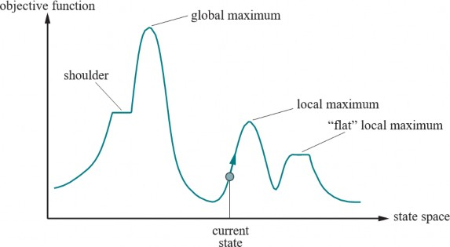
Tìm kiếm leo đồi
Thuật toán tìm kiếm leo đồi được thể hiện trong Hình 4.2. Nó theo dõi một trạng thái hiện tại và trong mỗi lần lặp, di chuyển đến trạng thái lân cận có giá trị cao nhất—tức là nó đi theo hướng mang lại độ dốc dâng lên dốc nhất. Nó kết thúc khi đạt đến một “đỉnh” nơi không có trạng thái lân cận nào có giá trị cao hơn. Leo đồi không nhìn xa hơn các trạng thái lân cận ngay lập tức của trạng thái hiện tại. Điều này giống như việc cố gắng tìm đỉnh núi Everest trong một màn sương dày đặc trong khi bị mất trí nhớ. Lưu ý rằng một cách để sử dụng tìm kiếm leo đồi là sử dụng giá trị âm của hàm chi phí heuristic làm hàm mục tiêu; điều đó sẽ leo cục bộ đến trạng thái có khoảng cách heuristic nhỏ nhất đến mục tiêu.
Để minh họa việc leo đồi, chúng ta sẽ sử dụng bài toán 8 quân hậu (Hình 4.3). Chúng ta sẽ sử dụng một công thức trạng thái hoàn chỉnh, có nghĩa là mọi trạng thái đều có tất cả các thành phần của một giải pháp, nhưng chúng có thể không ở đúng vị trí. Trong trường hợp này, mọi trạng thái đều có 8 quân hậu trên bàn cờ, mỗi cột một quân. Trạng thái ban đầu được chọn ngẫu nhiên và các trạng thái kế tiếp của một trạng thái là tất cả các trạng thái có thể được tạo ra bằng cách di chuyển một quân hậu duy nhất đến một ô vuông khác trong cùng một cột (vì vậy mỗi trạng thái có 8 × 7
= 56 trạng thái kế tiếp). Hàm chi phí heuristic ℎ là số cặp quân hậu đang tấn công nhau; điều này sẽ bằng 0 chỉ khi có giải pháp. (Nó được tính là một cuộc tấn công nếu hai quân cờ ở cùng một hàng, ngay cả khi có một quân cờ ở giữa chúng.) Hình 4.3(b) cho thấy một trạng thái có ℎ = 17 . Hình cũng cho thấy các giá trị ℎ của tất cả các trạng thái kế tiếp của nó.
function HILL-CLIMBING( problem) returns a state that is a local maximum
current←problem.Initial
while true do
neighbor← a highest-valued successor state of current
if Value(neighbor) ≤ Value(current) then return current current←neighbor
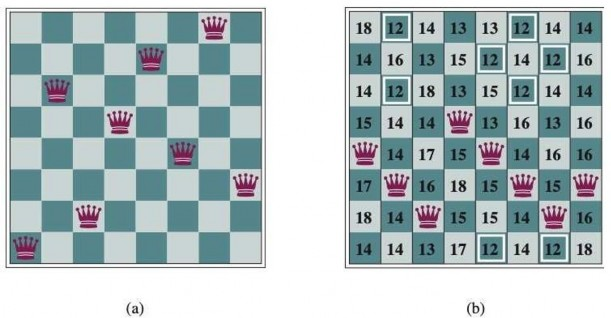
Hình 4.3 (a) Bài toán 8 quân hậu: đặt 8 quân hậu trên bàn cờ sao cho không có quân hậu nào tấn công quân hậu nào khác. (Một quân hậu tấn công bất kỳ quân cờ nào trong cùng hàng, cột hoặc đường chéo.) Vị trí này gần như là một giải pháp, ngoại trừ hai quân hậu ở cột thứ tư và thứ bảy tấn công nhau dọc theo đường chéo. (b) Một trạng thái 8 quân hậu với ước tính chi phí heuristic ℎ = 17 . Bàn cờ hiển thị giá trị của ℎ cho mỗi trạng thái kế tiếp có thể có được bằng cách di chuyển một quân hậu trong cột của nó. Có 8 nước đi được cho là tốt nhất, với ℎ = 12 . Thuật toán leo đồi sẽ chọn một trong số này.
Leo đồi đôi khi được gọi là tìm kiếm cục bộ tham lam vì nó “chộp lấy” một trạng thái lân cận tốt mà không suy nghĩ trước về việc sẽ đi đâu tiếp theo. Mặc dù tham lam được coi là một trong bảy tội lỗi chết người, nhưng các thuật toán tham lam thường hoạt động khá tốt. Leo đồi có thể đạt được tiến bộ nhanh chóng hướng tới một giải pháp vì thường khá dễ để cải thiện một trạng thái tồi. Ví dụ, từ trạng thái trong Hình 4.3(b), chỉ mất năm bước để đạt đến trạng thái trong Hình 4.3(a), có ℎ = 1 và gần như là một giải pháp. Thật không may, leo đồi có thể bị mắc kẹt vì bất kỳ lý do nào sau đây:
Cực đại cục bộ: Một cực đại cục bộ là một đỉnh cao hơn mỗi trạng thái lân cận của nó nhưng thấp hơn cực đại toàn cục. Các thuật toán leo đồi khi đạt đến vùng lân cận của một cực đại cục bộ sẽ bị kéo lên đỉnh nhưng sau đó sẽ bị mắc kẹt vì không còn nơi nào khác để đi. Hình 4.1 minh họa vấn đề này một cách sơ đồ. Cụ thể hơn, trạng thái trong Hình 4.3(a) là một cực đại cục bộ (tức là một cực tiểu cục bộ cho chi phí ℎ ); mọi lần di chuyển một quân hậu duy nhất đều làm cho tình hình trở nên tồi tệ hơn.
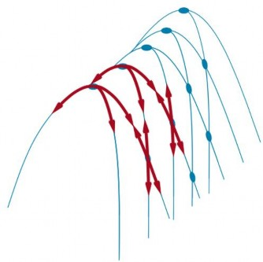
Trong mỗi trường hợp, thuật toán đạt đến một điểm mà không có tiến bộ nào được thực hiện. Bắt đầu từ một trạng thái 8 quân hậu được tạo ngẫu nhiên, việc leo đồi dốc nhất bị mắc kẹt 86% thời gian, chỉ giải quyết được 14% các trường hợp bài toán. Mặt khác, nó hoạt động nhanh chóng, chỉ mất trung bình 4 bước khi thành công và 3 bước khi bị mắc kẹt—không tệ đối với một không gian trạng thái với 88 ≈ 17 triệu trạng thái.
Làm thế nào chúng ta có thể giải quyết được nhiều bài toán hơn? Một câu trả lời là tiếp tục đi khi chúng ta đạt đến một cao nguyên—để cho phép một bước đi ngang với hy vọng rằng cao nguyên đó thực sự là một vai dốc, như trong Hình 4.1. Nhưng nếu chúng ta thực sự đang ở trên một cực đại cục bộ phẳng, thì cách tiếp cận này sẽ lang thang trên cao nguyên mãi mãi. Do đó, chúng ta có thể giới hạn số bước đi ngang liên tiếp, dừng lại sau, chẳng hạn, 100 bước đi ngang liên tiếp. Điều này nâng tỷ lệ phần trăm các trường hợp bài toán được giải quyết bằng leo đồi từ 14% lên 94%.
Thành công đi kèm với một cái giá: thuật toán mất trung bình khoảng 21 bước cho mỗi trường hợp
thành công và 64 bước cho mỗi trường hợp thất bại.
Nhiều biến thể của leo đồi đã được phát minh. Leo đồi ngẫu nhiên chọn ngẫu nhiên trong số các bước đi lên dốc; xác suất chọn có thể thay đổi theo độ dốc của bước đi lên. Điều này thường hội tụ chậm hơn so với leo dốc nhất, nhưng trong một số “bản đồ” trạng thái, nó tìm thấy các giải pháp tốt hơn. Leo đồi chọn đầu tiên thực hiện leo đồi ngẫu nhiên bằng cách tạo ra các trạng thái kế tiếp một cách ngẫu nhiên cho đến khi một trạng thái tốt hơn trạng thái hiện tại được tạo ra. Đây là một chiến lược tốt khi một trạng thái có nhiều (ví dụ: hàng nghìn) trạng thái kế tiếp.
Một biến thể khác là leo đồi khởi động ngẫu nhiên, áp dụng câu ngạn ngữ, “Nếu lúc đầu bạn không thành công, hãy cố gắng, cố gắng một lần nữa.” Nó thực hiện một loạt các tìm kiếm leo đồi từ các trạng thái ban đầu được tạo ngẫu nhiên, cho đến khi tìm thấy một mục tiêu. Nó hoàn thành với xác suất 1, bởi vì cuối cùng nó sẽ tạo ra một trạng thái mục tiêu làm trạng thái ban đầu. Nếu mỗi tìm kiếm leo đồi có xác suất 𝑝 thành công, thì số lần khởi động lại được mong đợi cần thiết là 1/𝑝 . Đối với các trường hợp 8 quân hậu không cho phép đi ngang, 𝑝 ≈ 0,14 , vì vậy chúng ta cần khoảng 7 lần lặp để tìm mục tiêu (6 lần thất bại và 1 lần thành công). Số bước được mong đợi là chi phí của một lần lặp thành công cộng với (1 − 𝑝)/𝑝 lần chi phí thất bại, hoặc khoảng 22 bước tất cả. Khi chúng ta cho phép các bước đi ngang, cần trung bình 1/0,94 ≈ 1,06 lần lặp và (1 × 21) + (0,06/0,94) × 64 ≈ 25 bước. Đối với 8 quân hậu, thì việc leo đồi khởi động ngẫu nhiên thực sự rất hiệu quả. Ngay cả đối với ba triệu quân hậu, cách tiếp cận này có thể tìm thấy giải pháp trong vài giây.
Sự thành công của leo đồi phụ thuộc rất nhiều vào hình dạng của “bản đồ” không gian trạng thái: nếu có ít cực đại cục bộ và cao nguyên, leo đồi khởi động ngẫu nhiên sẽ tìm thấy một giải pháp tốt rất nhanh chóng. Mặt khác, nhiều bài toán thực tế có một bản đồ giống như một gia đình nhím hói rải rác trên một sàn phẳng, với những con nhím nhỏ sống trên đầu mỗi chiếc kim của con nhím. Các bài toán NP-khó (xem Phụ lục A) thường có số lượng cực đại cục bộ theo cấp số nhân để bị mắc kẹt. Mặc dù vậy, một cực đại cục bộ hợp lý tốt thường có thể được tìm thấy sau một số ít lần khởi động lại.
Mô phỏng luyện kim (Simulated annealing)
Một thuật toán leo đồi mà không bao giờ thực hiện các bước đi “xuống dốc” hướng tới các trạng thái có giá trị thấp hơn (hoặc chi phí cao hơn) luôn dễ bị mắc kẹt trong một cực đại cục bộ. Ngược lại, một bước đi ngẫu nhiên thuần túy di chuyển đến một trạng thái kế tiếp mà không quan tâm đến giá trị cuối cùng cũng sẽ tìm thấy cực đại toàn cục, nhưng sẽ cực kỳ không hiệu quả. Do đó, có vẻ hợp lý khi cố gắng kết hợp leo đồi với một bước đi ngẫu nhiên theo cách mang lại cả hiệu quả và tính đầy đủ.
cục bộ sâu hơn, nơi nó sẽ dành nhiều thời gian hơn. Bí quyết là chỉ lắc đủ mạnh để nảy quả bóng ra khỏi cực tiểu cục bộ nhưng không đủ mạnh để nó bật ra khỏi cực tiểu toàn cục. Giải pháp mô phỏng luyện kim là bắt đầu bằng cách lắc mạnh (tức là ở nhiệt độ cao) và sau đó giảm dần cường độ lắc (tức là hạ nhiệt độ).
Cấu trúc tổng thể của thuật toán mô phỏng luyện kim (Hình 4.5) tương tự như leo đồi. Tuy nhiên, thay vì chọn nước đi tốt nhất, nó chọn một nước đi ngẫu nhiên. Nếu nước đi cải thiện tình hình, nó luôn được chấp nhận. Ngược lại, thuật toán chấp nhận nước đi với một xác suất nhỏ hơn 1. Xác suất giảm theo cấp số nhân với “mức độ tệ” của nước đi—lượng 𝐷𝑒𝑙𝑡𝑎𝐸 mà giá trị bị giảm đi. Xác suất cũng giảm khi “nhiệt độ” 𝑇 giảm xuống: các nước đi “tồi” có nhiều khả năng được cho phép ở lúc bắt đầu khi 𝑇 cao, và chúng trở nên ít có khả năng hơn khi 𝑇 giảm. Nếu lịch trình giảm 𝑇 xuống 0 đủ chậm, thì một thuộc tính của phân bố Boltzmann, 𝑒𝐷𝑒𝑙𝑡𝑎𝐸/𝑇 , là tất cả xác suất được tập trung vào các cực đại toàn cục, mà thuật toán sẽ tìm thấy với xác suất tiến đến 1.
function SIMULATED-ANNEALING( problem, schedule) returns a solution state
current←problem.Initial for t = 1 to ∞ do
T ←schedule(t)
if T = 0 then return current
next← a randomly selected successor of current
∆E← VALUE(current) – VALUE(next)
if ∆E > 0 then current←next
else current←next only with probability e∆E/T
Hình 4.5 Thuật toán mô phỏng luyện kim, một phiên bản của leo đồi ngẫu nhiên trong đó một số nước đi xuống dốc được cho phép. Đầu vào schedule xác định giá trị của “nhiệt độ” 𝑇 như là một hàm của thời gian.
Mô phỏng luyện kim đã được sử dụng để giải các bài toán bố trí VLSI bắt đầu từ những năm 1980. Nó đã được áp dụng rộng rãi cho việc lập lịch trình nhà máy và các tác vụ tối ưu hóa quy mô lớn khác.
Tìm kiếm chùm cục bộ (Local beam search)
Việc chỉ giữ một nút trong bộ nhớ có vẻ là một phản ứng cực đoan đối với vấn đề hạn chế bộ nhớ. Thuật toán tìm kiếm chùm cục bộ theo dõi 𝑘 trạng thái thay vì chỉ một. Nó bắt đầu với 𝑘 trạng thái được tạo ngẫu nhiên. Ở mỗi bước, tất cả các trạng thái kế tiếp của tất cả 𝑘 trạng thái được tạo ra. Nếu bất kỳ trạng thái nào là mục tiêu, thuật toán sẽ dừng lại. Ngược lại, nó chọn 𝑘 trạng thái kế tiếp tốt nhất từ danh sách đầy đủ và lặp lại.
Thoạt nhìn, một tìm kiếm chùm cục bộ với 𝑘 trạng thái có vẻ không khác gì việc chạy 𝑘 lần khởi động lại ngẫu nhiên song song thay vì tuần tự. Trên thực tế, hai thuật toán này khá khác nhau. Trong tìm kiếm khởi động lại ngẫu nhiên, mỗi quá trình tìm kiếm chạy độc lập với các quá trình khác. Trong tìm kiếm chùm cục bộ, thông tin hữu ích được truyền giữa các luồng tìm kiếm song song. Trên thực tế, các trạng thái tạo ra các trạng thái kế tiếp tốt nhất nói với những trạng thái khác, “Hãy đến đây, cỏ xanh hơn!” Thuật toán nhanh chóng từ bỏ các tìm kiếm không hiệu quả và chuyển nguồn lực của nó đến nơi đang có nhiều tiến bộ nhất.
Tìm kiếm chùm cục bộ có thể gặp phải vấn đề thiếu sự đa dạng giữa 𝑘 trạng thái—chúng có thể bị nhóm lại trong một vùng nhỏ của không gian trạng thái, làm cho việc tìm kiếm không hơn gì một phiên bản chậm hơn 𝑘 lần của leo đồi. Một biến thể được gọi là tìm kiếm chùm ngẫu nhiên, tương tự như leo đồi ngẫu nhiên, giúp giảm bớt vấn đề này. Thay vì chọn 𝑘 trạng thái kế tiếp hàng đầu, tìm kiếm chùm ngẫu nhiên chọn các trạng thái kế tiếp với xác suất tỷ lệ thuận với giá trị của trạng thái kế tiếp, do đó tăng tính đa dạng.
Thuật toán tiến hóa (Evolutionary algorithms)
Các thuật toán tiến hóa có thể được xem như các biến thể của tìm kiếm chùm ngẫu nhiên được thúc đẩy rõ ràng bởi phép ẩn dụ của chọn lọc tự nhiên trong sinh học: có một quần thể cá thể (trạng thái), trong đó các cá thể phù hợp nhất (giá trị cao nhất) tạo ra con cái (trạng thái kế tiếp) tạo thành thế hệ tiếp theo, một quá trình được gọi là tái tổ hợp. Có vô số dạng thuật toán tiến hóa, khác nhau theo những cách sau:
Số lượng kết hợp, 𝑟ℎ𝑜 , là số lượng cha mẹ kết hợp với nhau để tạo thành con cái. Trường hợp phổ biến nhất là 𝑟ℎ𝑜 = 2 : hai cha mẹ kết hợp “gen” của họ (các phần của biểu diễn của họ) để tạo thành con cái. Khi 𝑟ℎ𝑜 = 1 chúng ta có tìm kiếm chùm ngẫu nhiên (có thể được xem là sinh sản vô tính). Có thể có 𝑟ℎ𝑜2 , điều này hiếm khi xảy ra trong tự nhiên nhưng đủ dễ để mô phỏng trên máy tính.
Quá trình chọn lọc để chọn các cá thể sẽ trở thành cha mẹ của thế hệ tiếp theo: một khả năng là chọn từ tất cả các cá thể với xác suất tỷ lệ thuận với điểm phù hợp của họ. Một khả năng khác là chọn ngẫu nhiên 𝑛 cá thể ( 𝑛𝑟ℎ𝑜 ), và sau đó chọn 𝑟ℎ𝑜 cá thể phù hợp nhất làm cha mẹ.
Quy trình tái tổ hợp. Một cách tiếp cận phổ biến (giả sử 𝑟ℎ𝑜 = 2 ), là chọn ngẫu nhiên một điểm giao chéo để tách mỗi chuỗi cha mẹ, và tái tổ hợp các phần để tạo thành hai đứa con, một đứa có phần đầu tiên của cha mẹ 1 và phần thứ hai của cha mẹ 2; đứa kia có phần thứ hai của cha mẹ 1 và phần đầu tiên của cha mẹ 2.
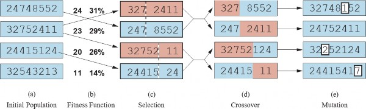
Hình 4.6(a) cho thấy một quần thể gồm bốn chuỗi 8 chữ số, mỗi chuỗi đại diện cho một trạng thái của bài toán 8 quân hậu: chữ số thứ 𝑐 đại diện cho số hàng của quân hậu ở cột 𝑐 . Trong (b), mỗi trạng thái được đánh giá bằng hàm phù hợp. Giá trị phù hợp cao hơn là tốt hơn, vì vậy đối với bài toán 8 quân hậu, chúng ta sử dụng số cặp quân hậu không tấn công nhau, có giá trị 8𝑡𝑖𝑚𝑒𝑠7/2 = 28 cho một giải pháp. Các giá trị của bốn trạng thái trong (b) là 24, 23, 20 và 11. Các điểm phù hợp sau đó được chuẩn hóa thành xác suất, và các giá trị kết quả được hiển thị bên cạnh các giá trị phù hợp trong (b).
Trong (c), hai cặp cha mẹ được chọn, phù hợp với xác suất trong (b). Lưu ý rằng một cá thể được chọn hai lần và một cá thể không được chọn lần nào. Đối với mỗi cặp được chọn, một điểm giao(đường chấm chấm) được chọn ngẫu nhiên. Trong (d), chúng ta giao chéo các chuỗi cha mẹ tại các điểm giao chéo, tạo ra con cái mới. Ví dụ, đứa con đầu tiên của cặp đầu tiên nhận ba chữ số đầu tiên (327) từ cha mẹ đầu tiên và các chữ số còn lại (48552) từ cha mẹ thứ hai. Các trạng thái 8 quân hậu liên quan đến bước tái tổ hợp này được thể hiện trong Hình 4.7.
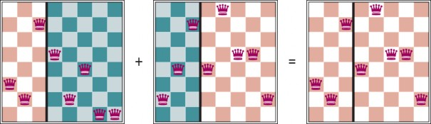
Cuối cùng, trong (e), mỗi vị trí trong mỗi chuỗi chịu đột biến ngẫu nhiên với một xác suất nhỏ độc lập. Một chữ số đã bị đột biến trong đứa con đầu tiên, thứ ba và thứ tư. Trong bài toán 8 quân hậu, điều này tương ứng với việc chọn một quân hậu ngẫu nhiên và di chuyển nó đến một ô vuông ngẫu nhiên trong cột của nó. Thường thì quần thể đa dạng sớm trong quá trình, vì vậy giao chéo thường thực hiện các bước lớn trong không gian trạng thái sớm trong quá trình tìm kiếm (như trong mô phỏng luyện kim). Sau nhiều thế hệ chọn lọc hướng tới độ phù hợp cao hơn, quần thể trở nên ít đa dạng hơn, và các bước nhỏ hơn là điển hình. Hình 4.8 mô tả một thuật toán thực hiện tất cả các bước này.
function GENETIC-ALGORITHM( population, fitness) returns an individual repeat
weights← WEIGHTED-BY(population,fitness) population2 ← empty list
for i = 1 to SIZE( population) do
parent1, parent2 ← Weighted-Random-Choices(population, weights, 2)
child← Reproduce(parent1, parent2)
if (small random probability) then child← MUTATE(child)
add child to population2
population←population2
until some individual is fit enough, or enough time has elapsed return the best individual in population, according to fitness
function REPRODUCE(parent1, parent2) returns an individual
n← Length(parent1)
c← random number from 1 to n
return Append(Substring(parent1, 1, c), Substring(parent2, c + 1, n))
Các thuật toán di truyền tương tự như tìm kiếm chùm ngẫu nhiên, nhưng có thêm hoạt động giao chéo. Điều này có lợi nếu có các khối thực hiện các chức năng hữu ích. Ví dụ, có thể việc đặt ba quân hậu đầu tiên vào các vị trí 2, 4 và 6 (nơi chúng không tấn công nhau) tạo thành một khối hữu ích có thể được kết hợp với các khối hữu ích khác xuất hiện ở các cá thể khác để xây dựng một giải pháp. Có thể chứng minh bằng toán học rằng, nếu các khối không phục vụ một mục đích—ví dụ nếu các vị trí của mã di truyền được hoán vị ngẫu nhiên—thì giao chéo không mang lại lợi thế nào.
Lý thuyết về thuật toán di truyền giải thích cách hoạt động này bằng cách sử dụng ý tưởng về một schema, là một chuỗi con trong đó một số vị trí có thể không được chỉ định. Ví dụ, schema 246*** mô tả tất cả các trạng thái 8 quân hậu trong đó ba quân hậu đầu tiên lần lượt ở các vị trí 2, 4 và 6. Các chuỗi khớp với schema (chẳng hạn như 24613578) được gọi là các trường hợp của schema. Có thể chứng minh rằng nếu độ phù hợp trung bình của các trường hợp của một schema cao hơn mức trung bình, thì số lượng các trường hợp của schema sẽ tăng theo thời gian.
Lý thuyết về tiến hóa được phát triển bởi Charles Darwin trong Về nguồn gốc các loài bằng con(1859) và độc lập bởi Alfred Russel Wallace (1858). Ý tưởng trung tâm rất đơn giản: các biến dị xảy ra trong sinh sản và sẽ được bảo tồn trong các thế hệ liên tiếp gần như tỷ lệ thuận với tác động của chúng đối với độ phù hợp sinh sản.
Lý thuyết của Darwin được phát triển mà không có kiến thức về cách các đặc điểm của sinh vật có thể được thừa hưởng và sửa đổi. Các quy luật xác suất chi phối các quá trình này lần đầu tiên được xác định bởi Gregor Mendel (1866), một nhà sư đã thí nghiệm với đậu ngọt. Rất lâu sau đó, Watson và Crick (1953) đã xác định cấu trúc của phân tử DNA và bảng chữ cái của nó, AGTC (adenine, guanine, thymine, cytosine). Trong mô hình tiêu chuẩn, biến dị xảy ra cả do đột biến điểm trong chuỗi chữ cái và do “giao chéo” (trong đó DNA của một đứa con được tạo ra bằng cách kết hợp các đoạn DNA dài từ mỗi cha mẹ).
Sự tương đồng với các thuật toán tìm kiếm cục bộ đã được mô tả; sự khác biệt chính giữa tìm kiếm chùm ngẫu nhiên và tiến hóa là việc sử dụng sinh sản hữu tính, trong đó các trạng thái kế tiếp được tạo ra từ nhiều cá thể hơn là chỉ một. Tuy nhiên, các cơ chế thực tế của tiến hóa phong phú hơn nhiều so với hầu hết các thuật toán di truyền cho phép. Ví dụ, đột biến có thể liên quan đến đảo ngược, sao chép và di chuyển các đoạn DNA lớn; một số virus mượn DNA từ một sinh vật và chèn nó vào một sinh vật khác; và có những gen chuyển vị không làm gì ngoài việc sao chép chính chúng hàng nghìn lần trong bộ gen.
Thậm chí còn có những gen đầu độc các tế bào từ những người bạn đời tiềm năng không mang gen đó, do đó làm tăng cơ hội sao chép của chính chúng. Quan trọng nhất là thực tế là chính các gen mã hóa các cơ chế mà bộ gen được tái tạo và dịch thành một sinh vật. Trong các thuật toán di truyền, các cơ chế đó là một chương trình riêng biệt không được biểu diễn trong các chuỗi đang được thao tác. Tiến hóa Darwin có vẻ không hiệu quả, đã tạo ra một cách mù quáng khoảng 1043 sinh vật mà không cải thiện các heuristic tìm kiếm của nó một chút nào. Nhưng học tập đóng một vai trò trong tiến hóa. Mặc dù nhà tự nhiên học vĩ đại người Pháp Jean Lamarck (1809) đã sai khi đề xuất rằng các đặc điểm có được bằng cách thích nghi trong suốt cuộc đời của một sinh vật sẽ được truyền lại cho con cái của nó, nhưng lý thuyết tương tự bề ngoài của James Baldwin (1896) là đúng: học tập có thể làm giảm hiệu quả bản đồ phù hợp, dẫn đến sự tăng tốc độ tiến hóa. Một sinh vật có một đặc điểm không hoàn toàn thích nghi với môi trường của nó sẽ truyền lại đặc điểm đó nếu nó cũng có đủ tính dẻo để học cách thích nghi với môi trường theo cách có lợi. Các mô phỏng trên máy tính (Hinton và Nowlan, 1987) xác nhận rằng hiệu ứng Baldwin này là có thật, và một hậu quả là những thứ khó học sẽ kết thúc trong bộ gen, nhưng những thứ dễ học thì không cần thiết phải ở đó (Morgan và Griffiths, 2015).
Rõ ràng, hiệu ứng này khó có thể đáng kể nếu các bit liền kề hoàn toàn không liên quan đến nhau, bởi vì khi đó sẽ có ít khối liền kề cung cấp một lợi ích nhất quán. Các thuật toán di truyền hoạt động tốt nhất khi các schema tương ứng với các thành phần có ý nghĩa của một giải pháp. Ví dụ, nếu chuỗi là một biểu diễn của một ăng-ten, thì các schema có thể đại diện cho các thành phần của ăng-ten, chẳng hạn như gương phản xạ và bộ làm lệch. Một thành phần tốt có khả năng tốt trong nhiều thiết kế khác nhau. Điều này cho thấy rằng việc sử dụng thành công các thuật toán di truyền đòi hỏi phải có sự thiết kế cẩn thận về cách biểu diễn.
Trong thực tế, các thuật toán di truyền có vị trí của chúng trong bối cảnh rộng lớn của các phương pháp tối ưu hóa (Marler và Arora, 2004), đặc biệt là đối với các bài toán có cấu trúc phức tạp như bố trí mạch điện hoặc lập lịch trình công việc, và gần đây hơn là để tiến hóa kiến trúc của các mạng thần kinh sâu (Miikkulainen và cộng sự, 2019). Không rõ sức hấp dẫn của các thuật toán di truyền xuất phát từ sự ưu việt của chúng trên các tác vụ cụ thể, hay từ phép ẩn dụ hấp dẫn của tiến hóa.
Tìm kiếm cục bộ trong không gian liên tục
Trong Chương 2, chúng ta đã giải thích sự khác biệt giữa môi trường rời rạc và liên tục, chỉ ra rằng hầu hết các môi trường trong thế giới thực là liên tục. Một không gian hành động liên tục có một hệ số phân nhánh vô hạn, và do đó không thể được xử lý bởi hầu hết các thuật toán mà chúng ta đã đề cập cho đến nay (ngoại trừ tìm kiếm leo đồi chọn đầu tiên và mô phỏng luyện kim).
Mục này cung cấp một giới thiệu rất ngắn gọn về một số kỹ thuật tìm kiếm cục bộ cho các không gian liên tục. Kho tàng tài liệu về chủ đề này là rất lớn; nhiều kỹ thuật cơ bản có nguồn gốc từ thế kỷ 17, sau sự phát triển của vi tích phân bởi Newton và Leibniz. Chúng ta tìm thấy cách sử dụng các kỹ thuật này ở một số nơi trong cuốn sách này, bao gồm các chương về học tập, thị giác và robot.
Chúng ta bắt đầu với một ví dụ. Giả sử chúng ta muốn đặt ba sân bay mới ở bất cứ đâu tại Romania, sao cho tổng bình phương khoảng cách đường thẳng từ mỗi thành phố trên bản đồ đến sân bay gần nhất của nó là nhỏ nhất. (Xem Hình 3.1 để biết bản đồ Romania.) Không gian trạng thái sau đó được xác định bởi tọa độ của ba sân bay: (𝑥1, 𝑦1) , (𝑥2, 𝑦2) và (𝑥3, 𝑦3) . Đây là một không gian sáu chiều; chúng ta cũng nói rằng các trạng thái được xác định bởi sáu biến. Nói chung, các trạng thái được xác định bởi một vectơ 𝑛 -chiều của các biến, 𝑥 . Di chuyển trong không gian này tương ứng với việc di chuyển một hoặc nhiều sân bay trên bản đồ. Hàm mục tiêu 𝑓(𝑥) =
𝑓(𝑥1, 𝑦1, 𝑥2, 𝑦2, 𝑥3, 𝑦3) tương đối dễ tính toán cho bất kỳ trạng thái cụ thể nào một khi chúng ta tính toán các thành phố gần nhất. Gọi 𝐶𝑖 là tập hợp các thành phố mà sân bay gần nhất (trong trạng thái 𝑥 ) là sân bay 𝑖 . Khi đó, chúng ta có
3
𝑓(𝑥) = 𝑓(𝑥1, 𝑦1, 𝑥2, 𝑦2, 𝑥3, 𝑦3) = ∑ ∑ (𝑥𝑖 − 𝑥𝑐)2 + (𝑦𝑖 − 𝑦𝑐)2
𝑖=1 𝑐∈𝐶𝑖
Phương trình này đúng không chỉ cho trạng thái 𝑥 mà còn cho các trạng thái trong vùng lân cận cục bộ của 𝑥 . Tuy nhiên, nó không đúng trên toàn cục; nếu chúng ta đi quá xa khỏi 𝑥 (bằng cách thay đổi vị trí của một hoặc nhiều sân bay với một lượng lớn) thì tập hợp các thành phố gần nhất cho sân bay đó sẽ thay đổi, và chúng ta cần tính toán lại 𝐶𝑖 .
Một cách để xử lý một không gian trạng thái liên tục là rời rạc hóa nó. Ví dụ, thay vì cho phép các vị trí (𝑥𝑖, 𝑦𝑖) là bất kỳ điểm nào trong không gian hai chiều liên tục, chúng ta có thể giới hạn chúng ở các điểm cố định trên một lưới hình chữ nhật với khoảng cách có kích thước 𝑑𝑒𝑙𝑡𝑎 (delta). Khi đó, thay vì có vô số trạng thái kế tiếp, mỗi trạng thái trong không gian sẽ chỉ có 12 trạng thái kế tiếp, tương ứng với việc tăng một trong 6 biến lên 𝑝𝑚𝑑𝑒𝑙𝑡𝑎 . Sau đó, chúng ta có thể áp dụng bất kỳ thuật toán tìm kiếm cục bộ nào của chúng ta cho không gian rời rạc này. Ngoài ra, chúng ta có thể làm cho hệ số phân nhánh hữu hạn bằng cách lấy mẫu các trạng thái kế tiếp một cách ngẫu nhiên, di chuyển theo một hướng ngẫu nhiên với một lượng nhỏ, 𝑑𝑒𝑙𝑡𝑎 . Các phương pháp đo
lường tiến độ bằng sự thay đổi trong giá trị của hàm mục tiêu giữa hai điểm gần nhau được gọi là các phương pháp gradient thực nghiệm. Tìm kiếm gradient thực nghiệm cũng giống như leo đồi dốc nhất trong một phiên bản rời rạc hóa của không gian trạng thái. Việc giảm giá trị của 𝑑𝑒𝑙𝑡𝑎 theo thời gian có thể mang lại một giải pháp chính xác hơn, nhưng không nhất thiết phải hội tụ đến một cực đại toàn cục trong giới hạn.
Thường thì chúng ta có một hàm mục tiêu được biểu diễn dưới dạng toán học sao cho chúng ta có thể sử dụng vi tích phân để giải bài toán một cách phân tích thay vì thực nghiệm. Nhiều phương pháp cố gắng sử dụng gradient của bản đồ để tìm một cực đại. Gradient của hàm mục tiêu là một vectơ 𝑛𝑎𝑏𝑙𝑎𝑓 cho biết độ lớn và hướng của độ dốc dốc nhất. Đối với bài toán của chúng ta, chúng ta có
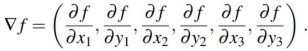
Trong một số trường hợp, chúng ta có thể tìm thấy một cực đại bằng cách giải phương trình ∇𝑓 =
0. (Điều này có thể được thực hiện, ví dụ, nếu chúng ta chỉ đặt một sân bay; giải pháp là trung bình cộng của tọa độ của tất cả các thành phố.) Tuy nhiên, trong nhiều trường hợp, phương trình này không thể giải được dưới dạng đóng. Ví dụ, với ba sân bay, biểu thức cho gradient phụ thuộc vào các thành phố gần nhất với mỗi sân bay trong trạng thái hiện tại. Điều này có nghĩa là chúng ta có thể tính toán gradient một cách cục bộ (nhưng không phải toàn cục); ví dụ,
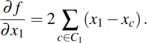
Với một biểu thức đúng cục bộ cho gradient, chúng ta có thể thực hiện leo đồi dốc nhất bằng cách cập nhật trạng thái hiện tại theo công thức
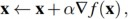
trong đó 𝑎𝑙𝑝ℎ𝑎 (alpha) là một hằng số nhỏ thường được gọi là kích thước bước. Tồn tại rất nhiều
phương pháp để điều chỉnh 𝑎𝑙𝑝ℎ𝑎 . Vấn đề cơ bản là nếu 𝑎𝑙𝑝ℎ𝑎 quá nhỏ, cần quá nhiều bước; nếu
𝑎𝑙𝑝ℎ𝑎 quá lớn, việc tìm kiếm có thể vượt qua cực đại. Kỹ thuật tìm kiếm đường thẳng cố gắng vượt qua tình thế tiến thoái lưỡng nan này bằng cách mở rộng hướng gradient hiện tại—thường bằng cách lặp lại nhân đôi 𝑎𝑙𝑝ℎ𝑎 —cho đến khi 𝑓 bắt đầu giảm trở lại. Điểm xảy ra điều này trở thành trạng thái hiện tại mới. Có một số trường phái tư tưởng về cách chọn hướng mới tại thời điểm này.
Đối với nhiều bài toán, thuật toán hiệu quả nhất là phương pháp Newton–Raphson đáng kính. Đây là một kỹ thuật chung để tìm nghiệm của các hàm—tức là giải các phương trình có dạng
𝑔(𝑥) = 0 . Nó hoạt động bằng cách tính toán một ước tính mới cho nghiệm 𝑥 theo công thức của Newton
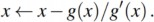
Để tìm một cực đại hoặc cực tiểu của $f$, chúng ta cần tìm $\$ sao cho gradient là một vectơ 0 (tức là ∇𝑓(𝑥) = 0). Do đó, 𝑔(𝑥) trong công thức của Newton trở thành ∇𝑓(𝑥), và phương trình cập nhật có thể được viết dưới dạng ma trận–vectơ là
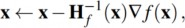
trong đó 𝐻𝑓(𝑥) là ma trận Hessian của các đạo hàm bậc hai, với các phần tử 𝐻𝑖𝑗 được cho bởi
𝜕2𝑓/ 𝜕𝑥𝑖 𝜕𝑥𝑗 . Đối với ví dụ về sân bay của chúng ta, chúng ta có thể thấy từ Phương trình (4.2) rằng 𝐻𝑓(𝑥) đặc biệt đơn giản: các phần tử ngoài đường chéo bằng 0 và các phần tử trên đường chéo cho sân bay 𝑖 chỉ bằng hai lần số thành phố trong 𝐶𝑖 . Một phép tính cho thấy một bước cập nhật sẽ di chuyển sân bay 𝑖 trực tiếp đến trọng tâm của 𝐶𝑖 , đây là cực tiểu của biểu thức cục bộ cho 𝑓 từ Phương trình (4.1). Tuy nhiên, đối với các bài toán có số chiều cao, việc tính toán 𝑛2 mục của Hessian và nghịch đảo nó có thể tốn kém, vì vậy nhiều phiên bản gần đúng của phương pháp Newton–Raphson đã được phát triển.
Các phương pháp tìm kiếm cục bộ phải chịu các cực đại cục bộ, sườn núi và cao nguyên trong không gian trạng thái liên tục nhiều như trong không gian rời rạc. Khởi động lại ngẫu nhiên và mô phỏng luyện kim thường hữu ích. Tuy nhiên, các không gian liên tục có chiều cao là những nơi lớn mà rất dễ bị lạc.
Một chủ đề cuối cùng là tối ưu hóa có ràng buộc. Một bài toán tối ưu hóa là có ràng buộc nếu các giải pháp phải thỏa mãn một số ràng buộc cứng về các giá trị của các biến. Ví dụ, trong bài toán định vị sân bay của chúng ta, chúng ta có thể ràng buộc các địa điểm phải nằm trong Romania và trên đất liền (thay vì ở giữa các hồ). Độ khó của các bài toán tối ưu hóa có ràng buộc phụ thuộc vào bản chất của các ràng buộc và hàm mục tiêu. Thể loại được biết đến nhiều nhất là các bài toán quy hoạch tuyến tính, trong đó các ràng buộc phải là các bất đẳng thức tuyến tính tạo thành một tập hợp lồi và hàm mục tiêu cũng tuyến tính. Độ phức tạp về thời gian của quy hoạch tuyến tính là đa thức theo số biến.
Quy hoạch tuyến tính có lẽ là phương pháp được nghiên cứu rộng rãi nhất và hữu ích nhất cho việc tối ưu hóa. Nó là một trường hợp đặc biệt của bài toán tổng quát hơn là tối ưu hóa lồi, cho phép vùng ràng buộc là bất kỳ vùng lồi nào và mục tiêu là bất kỳ hàm nào lồi trong vùng ràng buộc. Trong những điều kiện nhất định, các bài toán tối ưu hóa lồi cũng có thể giải được bằng đa thức và có thể khả thi trong thực tế với hàng nghìn biến. Một số bài toán quan trọng trong học máy và lý thuyết điều khiển có thể được xây dựng dưới dạng bài toán tối ưu hóa lồi (xem Chương 21).
Tìm kiếm với các hành động không xác định
Trong Chương 3, chúng ta giả định một môi trường hoàn toàn có thể quan sát được, xác định và đã biết. Do đó, một tác nhân có thể quan sát trạng thái ban đầu, tính toán một chuỗi các hành động để đạt đến mục tiêu và thực hiện các hành động với “mắt nhắm”, không bao giờ phải sử dụng các giác quan của nó.
Tuy nhiên, khi môi trường có thể quan sát được một phần, tác nhân không chắc chắn về trạng thái mà nó đang ở; và khi môi trường không xác định, tác nhân không biết nó sẽ chuyển sang trạng thái nào sau khi thực hiện một hành động. Điều đó có nghĩa là thay vì suy nghĩ “Tôi đang ở trạng thái
𝑠1 và nếu tôi thực hiện hành động 𝑎 tôi sẽ kết thúc ở trạng thái 𝑠2 ,” một tác nhân bây giờ sẽ suy nghĩ “Tôi đang ở trạng thái 𝑠1 hoặc 𝑠3 , và nếu tôi thực hiện hành động 𝑎 tôi sẽ kết thúc ở trạng thái 𝑠2 , 𝑠4 hoặc 𝑠5 .” Chúng ta gọi một tập hợp các trạng thái vật lý mà tác nhân tin là có thể xảy ra là một trạng thái niềm tin.
Trong các môi trường có thể quan sát được một phần và không xác định, giải pháp cho một bài toán không còn là một chuỗi, mà là một kế hoạch có điều kiện (đôi khi được gọi là kế hoạch dựhoặc chiến lược) chỉ định phải làm gì tùy thuộc vào những gì giác quan tác nhân nhận được trong khi thực hiện kế hoạch. Chúng ta kiểm tra tính không xác định trong mục này và khả năng quan sát một phần trong mục tiếp theo.
Thế giới chân không thất thường
Thế giới chân không từ Chương 2 có tám trạng thái, như trong Hình 4.9. Có ba hành động—Right, Left, và Suck—và mục tiêu là dọn sạch tất cả bụi bẩn (trạng thái 7 và 8). Nếu môi trường hoàn toàn có thể quan sát được, xác định và đã biết hoàn toàn, thì bài toán rất dễ giải quyết với bất kỳ thuật toán nào trong Chương 3, và giải pháp là một chuỗi hành động. Ví dụ, nếu trạng thái ban đầu là 1, thì chuỗi hành động [Suck, Right, Suck] sẽ đạt đến trạng thái mục tiêu, 8.
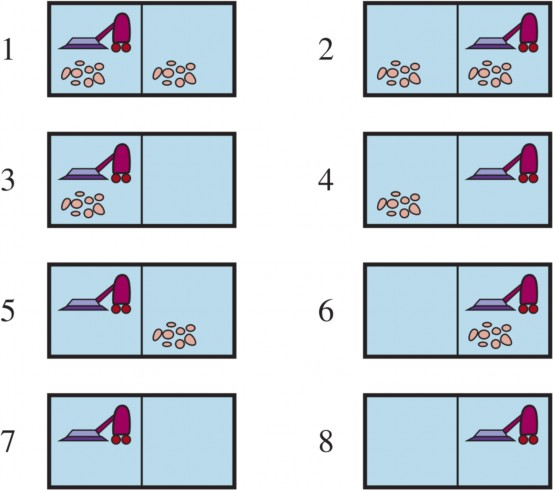
Bây giờ giả sử rằng chúng ta giới thiệu tính không xác định dưới dạng một máy hút bụi mạnh
nhưng thất thường. Trong thế giới chân không thất thường, hành động Suck hoạt động như sau:
Khi áp dụng cho một ô vuông bẩn, hành động làm sạch ô vuông và đôi khi cũng làm sạch bụi bẩn ở một ô vuông lân cận.
Khi áp dụng cho một ô vuông sạch, hành động đôi khi làm bẩn thảm.
Để cung cấp một công thức chính xác cho bài toán này, chúng ta cần khái quát hóa khái niệm môtừ Chương 3. Thay vì xác định mô hình chuyển đổi bằng một hàm RESULT trả về một trạng thái kết quả duy nhất, chúng ta sử dụng một hàm RESULTS trả về một tập hợp các trạng thái kết quả có thể xảy ra. Ví dụ, trong thế giới chân không thất thường, hành động Sucktrong trạng thái 1 làm sạch hoặc chỉ vị trí hiện tại, hoặc cả hai vị trí: Results(1, Suck) = {5, 7} Nếu chúng ta bắt đầu ở trạng thái 1, không có chuỗi hành động đơn lẻ nào giải quyết được bài toán, nhưng kế hoạch có điều kiện sau đây thì có: [Suck, if State = 5 then [Right, Suck] else [ ]] Ở đây chúng ta thấy rằng một kế hoạch có điều kiện có thể chứa các bước if–then–else; điều này có nghĩa là các giải pháp là các cây hơn là các chuỗi. Ở đây, điều kiện trong câu lệnh if kiểm tra xem trạng thái hiện tại là gì; đây là điều mà tác nhân sẽ có thể quan sát được trong thời gian chạy, nhưng không biết vào thời gian lập kế hoạch.
Ngoài ra, chúng ta có thể có một công thức kiểm tra giác quan thay vì trạng thái. Nhiều bài toán trong thế giới thực, vật lý là các bài toán dự phòng, vì việc dự đoán chính xác tương lai là không thể. Vì lý do này, nhiều người mở mắt khi đi lại.
Cây tìm kiếm AND–OR
Làm thế nào để chúng ta tìm ra các giải pháp có điều kiện cho các bài toán không xác định? Tương tự như trong Chương 3, chúng ta bắt đầu bằng cách xây dựng các cây tìm kiếm, nhưng ở đây các cây có một đặc điểm khác. Trong một môi trường xác định, sự phân nhánh duy nhất được tạo ra bởi các lựa chọn của chính tác nhân trong mỗi trạng thái: Tôi có thể thực hiện hành động này hoặc hành động kia. Chúng ta gọi các nút này là các nút OR. Trong thế giới chân không, ví dụ, tại một nút OR, tác nhân chọn Left, Right hoặc Suck. Trong một môi trường không xác định, sự phân nhánh cũng được tạo ra bởi sự lựa chọn của môi trường về kết quả cho mỗi hành động. Chúng ta gọi các nút này là các nút AND. Ví dụ, hành động Suck trong trạng thái 1 dẫn đến trạng thái niềm tin {5, 7}, vì vậy tác nhân sẽ cần tìm một kế hoạch cho trạng thái 5 và cho trạng thái 7. Hai loại nút này xen kẽ nhau, dẫn đến một cây AND–OR như được minh họa trong Hình 4.10.
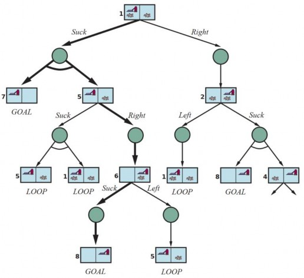
Một giải pháp cho một bài toán tìm kiếm AND–OR là một cây con của cây tìm kiếm hoàn chỉnh mà (1) có một nút mục tiêu ở mỗi lá, (2) chỉ định một hành động tại mỗi nút OR của nó và (3) bao gồm mọi nhánh kết quả tại mỗi nút AND của nó. Giải pháp được hiển thị bằng các đường đậm trong hình; nó tương ứng với kế hoạch được đưa ra trong Phương trình (4.3).
Hình 4.11 đưa ra một thuật toán đệ quy, tìm kiếm theo chiều sâu cho tìm kiếm đồ thị AND–OR. Một khía cạnh quan trọng của thuật toán là cách nó xử lý các chu kỳ, thường phát sinh trong các bài toán không xác định (ví dụ, nếu một hành động đôi khi không có tác dụng hoặc nếu một tác dụng ngoài ý muốn có thể được sửa chữa). Nếu trạng thái hiện tại giống hệt với một trạng thái trên đường đi từ gốc, thì nó trả về thất bại. Điều này không có nghĩa là không có giải pháp từ trạng thái hiện tại; nó chỉ đơn giản có nghĩa là nếu có một giải pháp không tuần hoàn, nó phải có thể đạt được từ trạng thái hiện tại trước đó, vì vậy phiên bản mới có thể bị loại bỏ. Với kiểm tra này, chúng ta đảm bảo rằng thuật toán sẽ kết thúc trong mọi không gian trạng thái hữu hạn, bởi vì mọi đường đi phải đạt đến mục tiêu, một ngõ cụt hoặc một trạng thái lặp lại. Lưu ý rằng thuật toán không
kiểm tra xem trạng thái hiện tại có phải là sự lặp lại của một trạng thái trên một đường đi khác từ
gốc hay không, điều này rất quan trọng đối với hiệu quả.
Các đồ thị AND–OR có thể được khám phá theo chiều rộng hoặc theo chiều tốt nhất. Khái niệm về một hàm heuristic phải được sửa đổi để ước tính chi phí của một giải pháp có điều kiện thay vì một chuỗi, nhưng khái niệm về tính chấp nhận được vẫn được giữ nguyên và có một tương tự của thuật toán A* để tìm các giải pháp tối ưu. (Xem các ghi chú thư mục ở cuối chương.)
function AND-OR-SEARCH(problem) returns a conditional plan, or failure return Or-Search(problem, problem.Initial, [ ])
function OR-SEARCH(problem, state, path) returns a conditional plan, or failure if problem.IS-GOAL(state) then return the empty plan
if IS-CYCLE(state, path) then return failure for each action in problem.Actions(state) do
plan← AND-SEARCH(problem, RESULTS(state, action), [state] + [path]) if plan /= failure then return [action] + [plan]
return failure
function AND-SEARCH(problem, states, path) returns a conditional plan, or failure for each si in states do
plani ← OR-SEARCH(problem, si, path) if plani = failure then return failure
return [if s1 then plan1 else if s2 then plan2 else . . . if sn−1 then plann−1 else plann]
Cố gắng, cố gắng lại
Hãy xem xét một thế giới chân không trơn trượt, giống hệt với thế giới chân không thông thường (không thất thường) ngoại trừ việc các hành động di chuyển đôi khi thất bại, để lại tác nhân ở cùng một vị trí. Ví dụ, di chuyển Right trong trạng thái 1 dẫn đến trạng thái niềm tin {1, 2}. Hình 4.12 cho thấy một phần của đồ thị tìm kiếm; rõ ràng, không còn bất kỳ giải pháp không tuần hoàn nào từ trạng thái 1, và AND-OR-SEARCH sẽ trả về thất bại. Tuy nhiên, có một giải pháp tuần hoàn, đó là tiếp tục thử Right cho đến khi nó hoạt động. Chúng ta có thể biểu diễn điều này bằng một cấu trúc while mới:
[Suck, while State = 5 do Right, Suck]
hoặc bằng cách thêm một nhãn để biểu thị một phần nào đó của kế hoạch và tham chiếu đến nhãn
đó sau này:
[Suck, L1: Right, if State = 5 then L1 else Suck]
Khi nào một kế hoạch tuần hoàn là một giải pháp? Một điều kiện tối thiểu là mọi lá đều là trạng thái mục tiêu và một lá có thể đạt được từ mọi điểm trong kế hoạch. Ngoài ra, chúng ta cần xem
xét nguyên nhân của tính không xác định. Nếu thực sự cơ chế truyền động của robot hút bụi hoạt động một lúc nào đó, nhưng trượt ngẫu nhiên và độc lập vào những dịp khác, thì tác nhân có thể tin tưởng rằng nếu hành động được lặp lại đủ lần, cuối cùng nó sẽ hoạt động và kế hoạch sẽ thành công. Nhưng nếu tính không xác định là do một sự thật không được quan sát về robot hoặc môi trường—có lẽ một dây đai truyền động đã bị đứt và robot sẽ không bao giờ di chuyển—thì việc lặp lại hành động sẽ không giúp ích gì.
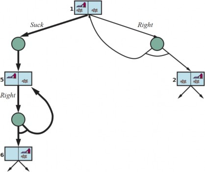
Một cách để hiểu quyết định này là nói rằng công thức bài toán ban đầu (hoàn toàn có thể quan sát được, không xác định) bị từ bỏ để chuyển sang một công thức khác (có thể quan sát được một phần, xác định) trong đó sự thất bại của kế hoạch tuần hoàn được gán cho một thuộc tính không được quan sát của dây đai truyền động. Trong Chương 12, chúng ta sẽ thảo luận về cách quyết định khả năng nào trong số một số khả năng không chắc chắn có nhiều khả năng hơn.
Tìm kiếm trong môi trường có thể quan sát được một phần
Bây giờ chúng ta chuyển sang bài toán về khả năng quan sát một phần, nơi các giác quan của tác nhân không đủ để xác định chính xác trạng thái. Điều đó có nghĩa là một số hành động của tác nhân sẽ nhằm mục đích giảm sự không chắc chắn về trạng thái hiện tại.
Tìm kiếm mà không có quan sát
Khi các giác quan của tác nhân không cung cấp bất kỳ thông tin nào cả, chúng ta có cái được gọi là bài toán không có cảm biến (hoặc một bài toán phù hợp). Lúc đầu, bạn có thể nghĩ rằng tác
nhân không có cảm biến không có hy vọng giải quyết một bài toán nếu nó không có ý tưởng về trạng thái mà nó bắt đầu, nhưng các giải pháp không có cảm biến lại phổ biến và hữu ích một cách đáng ngạc nhiên, chủ yếu là vì chúng không dựa vào cảm biến hoạt động đúng cách. Ví dụ, trong các hệ thống sản xuất, nhiều phương pháp khéo léo đã được phát triển để định hướng các bộ phận một cách chính xác từ một vị trí ban đầu không xác định bằng cách sử dụng một chuỗi các hành động mà không cần cảm biến nào cả. Đôi khi một kế hoạch không có cảm biến tốt hơn ngay cả khi có sẵn một kế hoạch có điều kiện với cảm biến. Ví dụ, các bác sĩ thường kê đơn thuốc kháng sinh phổ rộng thay vì sử dụng kế hoạch có điều kiện là làm xét nghiệm máu, sau đó chờ kết quả về, và sau đó kê một loại kháng sinh cụ thể hơn. Kế hoạch không có cảm biến tiết kiệm thời gian và tiền bạc, và tránh được nguy cơ nhiễm trùng trở nên tồi tệ hơn trước khi có kết quả xét nghiệm.
Hãy xem xét một phiên bản không có cảm biến của thế giới chân không (xác định). Giả sử rằng tác nhân biết địa lý của thế giới của nó, nhưng không biết vị trí của chính nó hoặc sự phân bố của bụi bẩn. Trong trường hợp đó, trạng thái niềm tin ban đầu của nó là {1, 2, 3, 4, 5, 6, 7, 8} (xem Hình 4.9). Bây giờ, nếu tác nhân di chuyển Right, nó sẽ ở một trong các trạng thái {2, 4, 6, 8}— tác nhân đã có được thông tin mà không cần cảm nhận bất cứ điều gì! Sau [Right, Suck], tác nhân sẽ luôn kết thúc ở một trong các trạng thái {4, 8}. Cuối cùng, sau [Right, Suck, Left, Suck], tác nhân được đảm bảo đạt đến trạng thái mục tiêu 7, bất kể trạng thái bắt đầu là gì. Chúng ta nói rằng tác nhân có thể cưỡng chế thế giới vào trạng thái 7.
Giải pháp cho một bài toán không có cảm biến là một chuỗi các hành động, không phải là một kế hoạch có điều kiện (vì không có sự cảm nhận). Nhưng chúng ta tìm kiếm trong không gian củathay vì các trạng thái vật lý. Trong không gian trạng thái niềm tin, bài toán hoàn toàn có thể quan sát được vì tác nhân luôn biết trạng thái niềm tin của chính nó. Hơn nữa, giải pháp (nếu có) cho một bài toán không có cảm biến luôn là một chuỗi các hành động. Điều này là do, như trong các bài toán thông thường của Chương 3, các giác quan nhận được sau mỗi hành động hoàn toàn có thể dự đoán được—chúng luôn trống rỗng! Vì vậy không có điều kiện dự phòng nào để lập kế hoạch. Điều này đúng ngay cả khi môi trường không xác định.
Chúng ta có thể giới thiệu các thuật toán mới cho các bài toán tìm kiếm không có cảm biến. Nhưng thay vào đó, chúng ta có thể sử dụng các thuật toán hiện có từ Chương 3 nếu chúng ta chuyển đổi bài toán vật lý cơ bản thành một bài toán trạng thái niềm tin, trong đó chúng ta tìm kiếm trên các trạng thái niềm tin thay vì các trạng thái vật lý. Bài toán ban đầu, P, có các thành phần Actions_P, Result_P, v.v., và bài toán trạng thái niềm tin có các thành phần sau:
Trạng thái: Không gian trạng thái niềm tin chứa mọi tập con có thể có của các trạng thái vật lý. Nếu P có N trạng thái, thì bài toán trạng thái niềm tin có 2𝑁 trạng thái niềm tin, mặc dù nhiều trong số đó có thể không thể đạt được từ trạng thái ban đầu.
Hành động: Điều này hơi khó. Giả sử tác nhân đang ở trạng thái niềm tin 𝑏 = 𝑠1, 𝑠2 , nhưng ACTIONS_P(s_1) /= ACTIONS_P(s_2); thì tác nhân không chắc chắn về hành động nào là hợp pháp. Nếu chúng ta giả định rằng các hành động bất hợp pháp không có tác dụng đối với môi trường, thì việc lấy hợp của tất cả các hành động trong bất kỳ trạng thái vật lý nào trong trạng thái niềm tin hiện tại 𝑏 là an toàn:Actions(b) = $\cup_{s \in b}$. Mặt khác, nếu một hành động bất hợp pháp có thể dẫn đến thảm họa, thì an
toàn hơn là chỉ cho phép giao, tức là tập hợp các hành động hợp pháp trong tất cả các trạng thái. Đối với thế giới chân không, mọi trạng thái đều có các hành động hợp pháp giống nhau, vì vậy cả hai phương pháp đều cho cùng một kết quả.
Mô hình chuyển đổi: Đối với các hành động xác định, trạng thái niềm tin mới có một trạng thái kết quả cho mỗi trạng thái khả thi hiện tại (mặc dù một số trạng thái kết quả có thể giống nhau): b' = RESULT(b, a) = {s' : s' = RESULT_P(s, a) and s ∈ b}. Với tính không xác định, trạng thái niềm tin mới bao gồm tất cả các kết quả có thể có của việc áp dụng hành động cho bất kỳ trạng thái nào trong trạng thái niềm tin hiện tại: b' = RESULT(b, a)
= {s' : s' ∈ RESULTS_P(s, a) and s ∈ b} = $\cup_{s \in b}$ Results_P(s, a). Kích thước của 𝑏′ sẽ bằng hoặc nhỏ hơn 𝑏 đối với các hành động xác định, nhưng có thể lớn hơn 𝑏 đối với các hành động không xác định (xem Hình 4.13).
Kiểm tra mục tiêu: Tác nhân có thể đạt được mục tiêu nếu bất kỳ trạng thái 𝑠 nào trong trạng thái niềm tin thỏa mãn kiểm tra mục tiêu của bài toán cơ bản, IS-GOAL_P(s). Tác nhân nhất thiết phải đạt được mục tiêu nếu mọi trạng thái đều thỏa mãn IS-GOAL_P(s). Chúng ta đặt mục tiêu là nhất thiết phải đạt được mục tiêu.
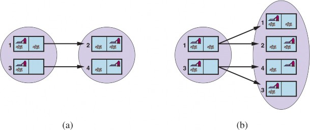
Hình 4.14 cho thấy phần có thể đạt được của không gian trạng thái niềm tin cho thế giới chân không không có cảm biến, xác định. Chỉ có 12 trạng thái niềm tin có thể đạt được trong số 28 = 256 trạng thái niềm tin có thể có.
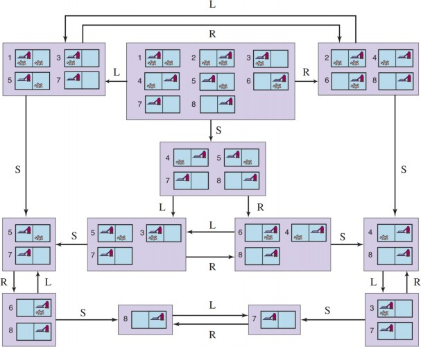
Các định nghĩa trên cho phép xây dựng tự động công thức bài toán trạng thái niềm tin từ định nghĩa của bài toán vật lý cơ bản. Sau khi điều này được thực hiện, chúng ta có thể giải các bài toán không có cảm biến bằng bất kỳ thuật toán tìm kiếm thông thường nào của Chương 3.
Trong tìm kiếm đồ thị thông thường, các trạng thái mới đạt được được kiểm tra để xem liệu chúng có được đạt đến trước đó hay không. Điều này cũng hoạt động đối với các trạng thái niềm tin; ví dụ, trong Hình 4.14, chuỗi hành động [Suck, Left, Suck] bắt đầu từ trạng thái ban đầu đạt đến trạng thái niềm tin giống như [Right, Left, Suck], cụ thể là {5, 7}. Bây giờ, hãy xem xét trạng thái niềm tin đạt được bởi [Left], cụ thể là {1, 3, 5, 7}. Rõ ràng, điều này không giống hệt {5, 7}, nhưng nó là một siêu tập. Chúng ta có thể loại bỏ (cắt tỉa) bất kỳ trạng thái niềm tin siêu tập nào như vậy. Tại sao? Bởi vì một giải pháp từ {1, 3, 5, 7} phải là một giải pháp cho mỗi trạng thái riêng lẻ 1, 3, 5 và 7, và do đó nó là một giải pháp cho bất kỳ sự kết hợp nào của các trạng thái riêng lẻ này, chẳng hạn như {5, 7}; do đó chúng ta không cần phải cố gắng giải {1, 3, 5, 7}, chúng ta có thể tập trung vào việc cố gắng giải trạng thái niềm tin dễ dàng hơn nhiều {5, 7}.
Ngược lại, nếu {1, 3, 5, 7} đã được tạo ra và được tìm thấy là có thể giải được, thì bất kỳ tập con nào, chẳng hạn như {5, 7}, đều được đảm bảo là có thể giải được. (Nếu tôi có một giải pháp hoạt động khi tôi rất bối rối về trạng thái tôi đang ở, nó vẫn sẽ hoạt động khi tôi bớt bối rối hơn.) Mức độ cắt tỉa bổ sung này có thể cải thiện đáng kể hiệu quả của việc giải bài toán không có cảm biến.
Tuy nhiên, ngay cả với cải tiến này, việc giải bài toán không có cảm biến như chúng ta đã mô tả hiếm khi khả thi trong thực tế. Một vấn đề là sự rộng lớn của không gian trạng thái niềm tin— chúng ta đã thấy trong chương trước rằng thường thì một không gian tìm kiếm có kích thước N là quá lớn, và bây giờ chúng ta có không gian tìm kiếm có kích thước 2𝑁 . Hơn nữa, mỗi phần tử của không gian tìm kiếm là một tập hợp có tới N phần tử. Đối với N lớn, chúng ta thậm chí sẽ không thể biểu diễn một trạng thái niềm tin duy nhất mà không hết dung lượng bộ nhớ.
Một giải pháp là biểu diễn trạng thái niềm tin bằng một mô tả nhỏ gọn hơn. Bằng tiếng Anh, chúng ta có thể nói tác nhân biết “Không có gì” ở trạng thái ban đầu; sau khi di chuyển Left, chúng ta có thể nói, “Không ở cột ngoài cùng bên phải,” và cứ thế. Chương 7 giải thích cách thực hiện điều này trong một sơ đồ biểu diễn chính thức.
Một cách tiếp cận khác là tránh các thuật toán tìm kiếm tiêu chuẩn, vốn coi các trạng thái niềm tin là các hộp đen giống như bất kỳ trạng thái bài toán nào khác. Thay vào đó, chúng ta có thể nhìn vào bên trong các trạng thái niềm tin và phát triển các thuật toán tìm kiếm trạng thái niềm tinxây dựng giải pháp từng trạng thái vật lý một. Ví dụ, trong thế giới chân không không có cảm biến, trạng thái niềm tin ban đầu là {1, 2, 3, 4, 5, 6, 7, 8}, và chúng ta phải tìm một chuỗi hành động hoạt động trong cả 8 trạng thái. Chúng ta có thể làm điều này bằng cách đầu tiên tìm một giải pháp hoạt động cho trạng thái 1; sau đó chúng ta kiểm tra xem nó có hoạt động cho trạng thái 2 không; nếu không, quay lại và tìm một giải pháp khác cho trạng thái 1, v.v.
Giống như một tìm kiếm AND–OR phải tìm một giải pháp cho mọi nhánh tại một nút AND, thuật toán này phải tìm một giải pháp cho mọi trạng thái trong trạng thái niềm tin; sự khác biệt là tìm kiếm AND–OR có thể tìm một giải pháp khác nhau cho mỗi nhánh, trong khi một tìm kiếm trạng thái niềm tin tăng dần phải tìm một giải pháp hoạt động cho tất cả các trạng thái.
Ưu điểm chính của cách tiếp cận tăng dần là nó thường có thể phát hiện thất bại một cách nhanh chóng—khi một trạng thái niềm tin không thể giải quyết được, thường thì một tập con nhỏ của trạng thái niềm tin, bao gồm vài trạng thái đầu tiên được kiểm tra, cũng không thể giải quyết được. Trong một số trường hợp, điều này dẫn đến tăng tốc độ tỷ lệ thuận với kích thước của các trạng thái niềm tin, mà bản thân chúng có thể lớn bằng chính không gian trạng thái vật lý.
Tìm kiếm trong môi trường có thể quan sát được một phần
Nhiều bài toán không thể giải quyết được nếu không có cảm biến. Ví dụ, bài toán 8-ô không có cảm biến là không thể. Mặt khác, một chút cảm biến có thể hữu ích rất nhiều: chúng ta có thể giải bài toán 8-ô nếu chúng ta chỉ có thể nhìn thấy ô vuông ở góc trên cùng bên trái. Giải pháp liên quan đến việc di chuyển từng ô một vào ô vuông có thể quan sát được và theo dõi vị trí của nó từ đó trở đi.
Đối với một bài toán có thể quan sát được một phần, đặc tả bài toán sẽ chỉ định một hàm
biến là không xác định, thì chúng ta có thể sử dụng một hàm PERCEPTS trả về một tập hợp các cảm nhận có thể có. Đối với các bài toán có thể quan sát được hoàn toàn, PERCEPT(s) = s cho mọi trạng thái s, và đối với các bài toán không có cảm biến, PERCEPT(s) = null.
Hãy xem xét một thế giới chân không có cảm biến cục bộ, trong đó tác nhân có một cảm biến vị trí cho cảm nhận L ở ô vuông bên trái và R ở ô vuông bên phải, và một cảm biến bụi bẩn cho cảm nhận Dirty khi ô vuông hiện tại bị bẩn và Clean khi nó sạch. Do đó, PERCEPT ở trạng thái 1 là [L, Dirty]. Với khả năng quan sát một phần, thường thì một số trạng thái sẽ tạo ra cùng một cảm nhận; trạng thái 3 cũng sẽ tạo ra [L, Dirty]. Do đó, với cảm nhận ban đầu này, trạng thái niềm tin ban đầu sẽ là {1, 3}. Chúng ta có thể nghĩ về mô hình chuyển đổi giữa các trạng thái niềm tin cho các bài toán có thể quan sát được một phần xảy ra trong ba giai đoạn, như trong Hình 4.15:
Giai đoạn dự đoán tính toán trạng thái niềm tin là kết quả của hành động, RESULT(b, a), chính xác như chúng ta đã làm với các bài toán không có cảm biến. Để nhấn mạnh rằng đây là một dự đoán, chúng ta sử dụng ký hiệu ℎ𝑎𝑡𝑏 = RESULT(b, a), trong đó “mũ” trên b có nghĩa là “ước tính,” và chúng ta cũng sử dụng PREDICT(b, a) làm từ đồng nghĩa với RESULT(b, a).
Giai đoạn các cảm nhận có thể có tính toán tập hợp các cảm nhận có thể được quan sát trong trạng thái niềm tin đã dự đoán (sử dụng chữ cái o cho quan sát): POSSIBLE-ℎ𝑎𝑡𝑏 ) = {o : o = PERCEPT(s) và s ∈ ℎ𝑎𝑡𝑏 }
Giai đoạn cập nhật tính toán, cho mỗi cảm nhận có thể có, trạng thái niềm tin sẽ là kết quả từ cảm nhận đó. Trạng thái niềm tin được cập nhật 𝑏𝑜 là tập hợp các trạng thái trong ℎ𝑎𝑡𝑏 có thể đã tạo ra cảm nhận đó: 𝑏𝑜 = UPDATE( ℎ𝑎𝑡𝑏 , o) = {s : o = PERCEPT(s) và s ∈ ℎ𝑎𝑡𝑏 }
Tác nhân cần phải xử lý các cảm nhận có thể có tại thời điểm lập kế hoạch, vì nó sẽ không biết các cảm nhận thực tế cho đến khi nó thực hiện kế hoạch. Lưu ý rằng tính không xác định trong môi trường vật lý có thể mở rộng trạng thái niềm tin trong giai đoạn dự đoán, nhưng mỗi trạng thái niềm tin được cập nhật 𝑏𝑜 không thể lớn hơn trạng thái niềm tin đã dự đoán ℎ𝑎𝑡𝑏 ; các quan sát chỉ có thể giúp giảm sự không chắc chắn. Hơn nữa, đối với cảm biến xác định, các trạng thái niềm tin cho các cảm nhận có thể có khác nhau sẽ rời nhau, tạo thành một phân hoạch của trạng thái niềm tin đã dự đoán ban đầu.
Kết hợp ba giai đoạn này lại với nhau, chúng ta thu được các trạng thái niềm tin có thể có là kết quả của một hành động nhất định và các cảm nhận có thể có sau đó:
𝑅𝐸𝑆𝑈𝐿𝑇𝑆(𝑏, 𝑎)
= { 𝑏𝑜 ∣ 𝑏𝑜 = 𝑈𝑃𝐷𝐴𝑇𝐸(𝑃𝑅𝐸𝐷𝐼𝐶𝑇(𝑏, 𝑎), 𝑜)𝑣𝑎ˋ𝑜 ∈ 𝑃𝑂𝑆𝑆𝐼𝐵𝐿𝐸 − 𝑃𝐸𝑅𝐶𝐸𝑃𝑇𝑆(𝑃𝑅𝐸𝐷𝐼𝐶𝑇(𝑏, 𝑎)) }
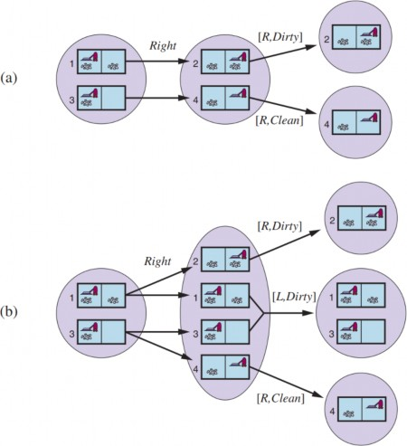
(b) Trong thế giới trơn trượt, Right được áp dụng trong trạng thái niềm tin ban đầu, cho một trạng thái niềm tin mới với bốn trạng thái vật lý; đối với các trạng thái đó, các cảm nhận có thể có là [L, Dirty], [R, Dirty] và [R, Clean], dẫn đến ba trạng thái niềm tin như được hiển thị.
4.3.2 Giải quyết các bài toán có thể quan sát được một phần
Mục trước đã chỉ ra cách suy ra hàm RESULTS cho một bài toán trạng thái niềm tin không xác định từ một bài toán vật lý cơ bản, với hàm PERCEPT. Với công thức này, thuật toán tìm kiếm AND–OR của Hình 4.11 có thể được áp dụng trực tiếp để suy ra một giải pháp. Hình 4.16 cho thấy một phần của cây tìm kiếm cho thế giới chân không có cảm biến cục bộ, giả sử cảm nhận ban đầu là [L, Dirty]. Giải pháp là kế hoạch có điều kiện
[Suck, Right, if Rstate = {6} then Suck else [ ]]
Lưu ý rằng, vì chúng ta đã cung cấp một bài toán trạng thái niềm tin cho thuật toán tìm kiếm AND– OR, nó đã trả về một kế hoạch có điều kiện kiểm tra trạng thái niềm tin thay vì trạng thái thực tế. Điều này là đúng như vậy: trong một môi trường có thể quan sát được một phần, tác nhân sẽ không biết trạng thái thực tế.
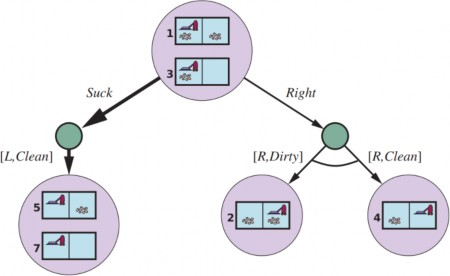
Cũng như trường hợp các thuật toán tìm kiếm tiêu chuẩn được áp dụng cho các bài toán không có cảm biến, thuật toán tìm kiếm AND–OR coi các trạng thái niềm tin là các hộp đen, giống như bất kỳ trạng thái nào khác. Người ta có thể cải thiện điều này bằng cách kiểm tra các trạng thái niềm tin đã được tạo ra trước đó là các tập con hoặc siêu tập của trạng thái hiện tại, giống như đối với các bài toán không có cảm biến. Người ta cũng có thể suy ra các thuật toán tìm kiếm tăng dần, tương tự như những thuật toán được mô tả cho các bài toán không có cảm biến, cung cấp tốc độ tăng đáng kể so với cách tiếp cận hộp đen.
4.4.4 Một tác nhân cho môi trường có thể quan sát được một phần
Một tác nhân cho môi trường có thể quan sát được một phần xây dựng một bài toán, gọi một thuật toán tìm kiếm (chẳng hạn như AND-OR-SEARCH) để giải quyết nó và thực hiện giải pháp. Có hai điểm khác biệt chính giữa tác nhân này và tác nhân cho môi trường xác định hoàn toàn có thể quan sát được. Thứ nhất, giải pháp sẽ là một kế hoạch có điều kiện hơn là một chuỗi; để thực hiện một biểu thức if–then–else, tác nhân sẽ cần kiểm tra điều kiện và thực hiện nhánh thích hợp của điều kiện. Thứ hai, tác nhân sẽ cần duy trì trạng thái niềm tin của mình khi nó thực hiện các hành động và nhận các cảm nhận. Quá trình này giống với quá trình dự đoán–quan sát–cập nhật trong Phương trình (4.5) nhưng thực tế đơn giản hơn vì cảm nhận được môi trường cung cấp thay vì được tác nhân tính toán. Với một trạng thái niềm tin ban đầu b, một hành động a, và một cảm nhận o, trạng thái niềm tin mới là:
𝑏′ = 𝑈𝑃𝐷𝐴𝑇𝐸(𝑃𝑅𝐸𝐷𝐼𝐶𝑇(𝑏, 𝑎), 𝑜)
Quá trình này được gọi là giám sát, lọc và ước tính trạng thái. Phương trình (4.6) được gọi là bộvì nó tính toán trạng thái niềm tin mới từ trạng thái trước đó thay vì bằng cách kiểm tra toàn bộ chuỗi cảm nhận. Nếu tác nhân không muốn bị “tụt lại phía sau”, việc tính toán phải diễn ra nhanh chóng khi các cảm nhận đến. Khi môi trường trở nên phức tạp hơn, tác nhân sẽ chỉ có thời gian để tính toán một trạng thái niềm tin gần đúng, có lẽ tập trung vào ý nghĩa của cảm nhận đối với các khía cạnh của môi trường đang được quan tâm hiện tại. Hầu hết công việc về bài toán này đã được thực hiện cho các môi trường ngẫu nhiên, trạng thái liên tục với các công cụ của lý thuyết xác suất, như đã giải thích trong Chương 14.
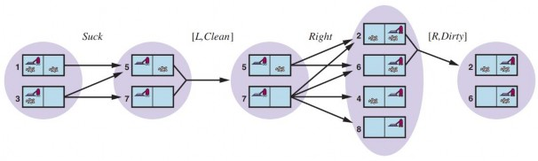
Trong mục này, chúng ta sẽ đưa ra một ví dụ trong một môi trường rời rạc với các cảm biến xác định và các hành động không xác định. Ví dụ liên quan đến một robot với một nhiệm vụ ước tính trạng thái cụ thể được gọi là định vị: xác định vị trí của nó, với một bản đồ của thế giới và một chuỗi các cảm nhận và hành động. Robot của chúng ta được đặt trong môi trường giống như mê cung của Hình 4.18. Robot được trang bị bốn cảm biến sonar cho biết liệu có chướng ngại vật hay không—bức tường bên ngoài hoặc một ô vuông màu đậm trong hình—ở mỗi trong bốn hướng la bàn. Cảm nhận có dạng một vectơ bit, một bit cho mỗi hướng bắc, đông, nam và tây theo thứ tự đó, vì vậy 1011 có nghĩa là có chướng ngại vật ở phía bắc, nam và tây, nhưng không phải phía đông.
Chúng ta giả định rằng các cảm biến cung cấp dữ liệu hoàn toàn chính xác và robot có một bản đồ chính xác của môi trường. Nhưng thật không may, hệ thống định vị của robot bị hỏng, vì vậy khi nó thực hiện một hành động Right, nó di chuyển ngẫu nhiên đến một trong các ô vuông liền kề. Nhiệm vụ của robot là xác định vị trí hiện tại của nó.
Giả sử robot vừa được bật, và nó không biết nó đang ở đâu—trạng thái niềm tin ban đầu b của nó bao gồm tập hợp tất cả các vị trí. Robot sau đó nhận được cảm nhận 1011 và thực hiện cập nhật bằng cách sử dụng phương trình 𝑏𝑜 = UPDATE(1011), cho ra 4 vị trí được hiển thị trong Hình 4.18(a). Bạn có thể kiểm tra mê cung để thấy rằng đó là bốn vị trí duy nhất tạo ra cảm nhận 1011.
Tiếp theo, robot thực hiện một hành động Right, nhưng kết quả là không xác định. Trạng thái niềm tin mới, 𝑏𝑎 = PREDICT( 𝑏𝑜 , Right), chứa tất cả các vị trí cách các vị trí trong 𝑏𝑜 một bước. Khi cảm nhận thứ hai, 1010, đến, robot thực hiện UPDATE( 𝑏𝑎 , 1010) và thấy rằng trạng thái niềm
tin đã thu gọn lại thành một vị trí duy nhất được hiển thị trong Hình 4.18(b). Đó là vị trí duy nhất có thể là kết quả của
Update(Predict(Update(b, 1011), Right), 1010)
Với các hành động không xác định, bước PREDICT làm cho trạng thái niềm tin phát triển, nhưng bước UPDATE lại thu nhỏ nó lại—miễn là các cảm nhận cung cấp một số thông tin nhận dạng hữu ích. Đôi khi các cảm nhận không giúp ích nhiều cho việc định vị: Nếu có một hoặc nhiều hành lang dài đông–tây, thì một robot có thể nhận được một chuỗi dài các cảm nhận 1010, nhưng không bao giờ biết nó đang ở đâu trong hành lang. Nhưng đối với các môi trường có sự thay đổi hợp lý về địa lý, việc định vị thường hội tụ nhanh chóng đến một điểm duy nhất, ngay cả khi các hành động là không xác định. Điều gì sẽ xảy ra nếu các cảm biến bị lỗi? Nếu chúng ta chỉ có thể lý luận bằng logic Boolean, thì chúng ta phải coi mỗi bit cảm biến là đúng hoặc sai, điều này cũng giống như không có thông tin cảm nhận nào cả. Nhưng chúng ta sẽ thấy rằng lý luận xác suất (Chương 12), cho phép chúng ta trích xuất thông tin hữu ích từ một cảm biến bị lỗi miễn là nó sai ít hơn một nửa thời gian.
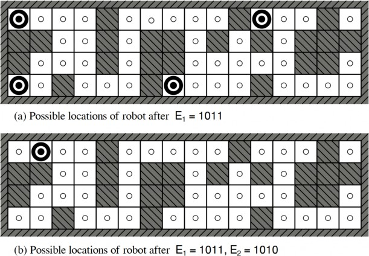
Hình 4.18 Các vị trí có thể có của robot, ⊙, (a) sau một quan sát, E1 = 1011, và (b) sau khi di chuyển một ô vuông và thực hiện một quan sát thứ hai, E2 = 1010. Khi các cảm biến không có nhiễu và mô hình chuyển đổi chính xác, chỉ có một vị trí có thể có cho robot nhất quán với chuỗi hai quan sát này.
Tác nhân tìm kiếm trực tuyến và môi trường không xác định
Cho đến nay, chúng ta đã tập trung vào các tác nhân sử dụng thuật toán tìm kiếm ngoại tuyến. Chúng tính toán một giải pháp hoàn chỉnh trước khi thực hiện hành động đầu tiên của mình. Ngược lại, một tác nhân tìm kiếm trực tuyến xen kẽ giữa tính toán và hành động: đầu tiên nó thực hiện một hành động, sau đó nó quan sát môi trường và tính toán hành động tiếp theo. Tìm kiếm trực tuyến là một ý tưởng hay trong các môi trường động hoặc bán động, nơi có một hình phạt cho việc ngồi yên và tính toán quá lâu. Tìm kiếm trực tuyến cũng hữu ích trong các miền không xác định vì nó cho phép tác nhân tập trung nỗ lực tính toán của mình vào các trường hợp dự phòng thực sự phát sinh thay vì những trường hợp có thể xảy ra nhưng có thể sẽ không xảy ra.
Tất nhiên, có một sự đánh đổi: tác nhân càng lập kế hoạch trước nhiều, nó càng ít khi thấy mình rơi vào tình thế tiến thoái lưỡng nan. Trong các môi trường không xác định, nơi tác nhân không biết những trạng thái nào tồn tại hoặc hành động của nó làm gì, tác nhân phải sử dụng các hành động của mình như những thử nghiệm để tìm hiểu về môi trường. Một ví dụ điển hình về tìm kiếm trực tuyến là bài toán lập bản đồ: một robot được đặt trong một tòa nhà không xác định và phải khám phá để xây dựng một bản đồ mà sau này có thể được sử dụng để đi từ A đến B. Các phương pháp thoát khỏi mê cung—kiến thức bắt buộc đối với các anh hùng đầy tham vọng của thời cổ đại—cũng là ví dụ về các thuật toán tìm kiếm trực tuyến. Tuy nhiên, khám phá không gian không phải là hình thức khám phá trực tuyến duy nhất. Hãy xem xét một em bé sơ sinh: nó có nhiều hành động có thể nhưng không biết kết quả của bất kỳ hành động nào trong số đó, và nó chỉ trải qua một vài trong số các trạng thái có thể mà nó có thể đạt được.
Các bài toán tìm kiếm trực tuyến
Một bài toán tìm kiếm trực tuyến được giải quyết bằng cách xen kẽ tính toán, cảm nhận và hành động. Chúng ta sẽ bắt đầu bằng cách giả định một môi trường xác định và hoàn toàn có thể quan sát được (Chương 16 sẽ nới lỏng các giả định này) và quy định rằng tác nhân chỉ biết những điều sau:
ACTIONS(s), các hành động hợp pháp trong trạng thái s;
c(s, a, s'), chi phí của việc áp dụng hành động a trong trạng thái s để đến trạng thái s’. Lưu
ý rằng điều này không thể được sử dụng cho đến khi tác nhân biết rằng s’ là kết quả.
IS-GOAL(s), kiểm tra mục tiêu.
Đặc biệt lưu ý rằng tác nhân không thể xác định RESULT(s, a) ngoại trừ bằng cách thực sự ở trong s và thực hiện a. Ví dụ, trong bài toán mê cung được hiển thị trong Hình 4.19, tác nhân không biết rằng đi Up từ (1, 1) dẫn đến (1, 2); cũng không, sau khi đã làm điều đó, nó biết rằng đi Down sẽ đưa nó trở lại (1, 1). Mức độ thiếu hiểu biết này có thể được giảm bớt trong một số ứng dụng—ví dụ, một robot thám hiểm có thể biết các hành động di chuyển của nó hoạt động như thế nào và chỉ không biết về vị trí của các chướng ngại vật.
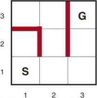
Cuối cùng, tác nhân có thể có quyền truy cập vào một hàm heuristic chấp nhận được h(s) ước tính khoảng cách từ trạng thái hiện tại đến một trạng thái mục tiêu. Ví dụ, trong Hình 4.19, tác nhân có thể biết vị trí của mục tiêu và có thể sử dụng heuristic khoảng cách Manhattan (trang 116). Thông thường, mục tiêu của tác nhân là đạt đến một trạng thái mục tiêu trong khi giảm thiểu chi phí. (Một mục tiêu khả thi khác chỉ đơn giản là khám phá toàn bộ môi trường.) Chi phí là tổng chi phí đường đi mà tác nhân phải chịu khi nó di chuyển. Phổ biến là so sánh chi phí này với chi phí đường đi mà tác nhân sẽ phải chịu nếu nó biết trước không gian tìm kiếm—tức là đường đi tối ưu trong môi trường đã biết. Trong ngôn ngữ của các thuật toán trực tuyến, so sánh này được gọi là tỷ lệ cạnh; chúng ta muốn nó càng nhỏ càng tốt.
Các nhà thám hiểm trực tuyến dễ bị tổn thương bởi các ngõ cụt: các trạng thái mà từ đó không thể đạt được trạng thái mục tiêu nào. Nếu tác nhân không biết mỗi hành động làm gì, nó có thể thực hiện hành động “nhảy xuống hố sâu không đáy”, và do đó không bao giờ đạt được mục tiêu. Nói chung, không có thuật toán nào có thể tránh các ngõ cụt trong tất cả các không gian trạng thái. Hãy xem xét hai không gian trạng thái ngõ cụt trong Hình 4.20(a). Một thuật toán tìm kiếm trực tuyến đã truy cập các trạng thái S và A không thể biết liệu nó đang ở trong không gian trạng thái trên cùng hay dưới cùng; hai cái trông giống hệt nhau dựa trên những gì tác nhân đã thấy. Do đó, không có cách nào nó có thể biết cách chọn hành động chính xác trong cả hai không gian trạng thái. Đây là một ví dụ về một lập luận phản biện—chúng ta có thể tưởng tượng một đối thủ xây dựng không gian trạng thái trong khi tác nhân khám phá nó và đặt các mục tiêu và ngõ cụt ở bất cứ đâu nó chọn, như trong Hình 4.20(b).
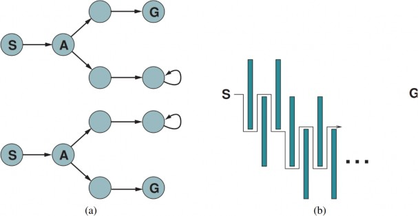
Ngõ cụt là một khó khăn thực sự đối với việc khám phá của robot—cầu thang, đoạn dốc, vách đá, đường một chiều và thậm chí cả địa hình tự nhiên đều có các trạng thái mà từ đó một số hành động là không thể đảo ngược—không có cách nào để quay lại trạng thái trước đó. Thuật toán khám phá mà chúng ta sẽ trình bày chỉ được đảm bảo hoạt động trong các không gian trạng thái có thể khám phá một cách an toàn—tức là một số trạng thái mục tiêu có thể đạt được từ mọi trạng thái có thể đạt được. Các không gian trạng thái chỉ có các hành động có thể đảo ngược, chẳng hạn như mê cung và 8-ô, rõ ràng là có thể khám phá một cách an toàn (nếu chúng có bất kỳ giải pháp nào cả). Chúng ta sẽ đề cập đến chủ đề khám phá an toàn chi tiết hơn trong Mục 23.3.2.
Ngay cả trong các môi trường có thể khám phá một cách an toàn, không có tỷ lệ cạnh tranh bị chặn nào có thể được đảm bảo nếu có các đường đi có chi phí không bị chặn. Điều này dễ dàng được chứng minh trong các môi trường có các hành động không thể đảo ngược, nhưng trên thực tế nó vẫn đúng đối với trường hợp có thể đảo ngược, như Hình 4.20(b) cho thấy. Vì lý do này, người ta thường đặc trưng hiệu suất của các thuật toán tìm kiếm trực tuyến bằng kích thước của toàn bộ không gian trạng thái hơn là chỉ độ sâu của mục tiêu nông nhất.
Các tác nhân tìm kiếm trực tuyến
Sau mỗi hành động, một tác nhân trực tuyến trong một môi trường có thể quan sát được sẽ nhận được một cảm nhận cho nó biết nó đã đạt đến trạng thái nào; từ thông tin này, nó có thể bổ sung bản đồ của môi trường. Bản đồ được cập nhật sau đó được sử dụng để lập kế hoạch nơi sẽ đi tiếp. Sự xen kẽ giữa lập kế hoạch và hành động này có nghĩa là các thuật toán tìm kiếm trực tuyến khá
khác so với các thuật toán tìm kiếm ngoại tuyến mà chúng ta đã thấy trước đây: các thuật toán ngoại tuyến khám phá mô hình của không gian trạng thái, trong khi các thuật toán trực tuyến khám phá thế giới thực. Ví dụ, A* có thể mở rộng một nút ở một phần của không gian và sau đó ngay lập tức mở rộng một nút ở một phần xa xôi của không gian, bởi vì việc mở rộng nút liên quan đến các hành động mô phỏng chứ không phải hành động thực.
Mặt khác, một thuật toán trực tuyến chỉ có thể khám phá những người kế thừa cho một trạng thái mà nó đang chiếm giữ về mặt vật lý. Để tránh phải đi khắp nơi đến một trạng thái xa xôi để mở rộng nút tiếp theo, có vẻ tốt hơn là mở rộng các nút theo thứ tự cục bộ. Tìm kiếm theo chiều sâu chính xác có thuộc tính này bởi vì (ngoại trừ khi thuật toán đang quay lui) nút tiếp theo được mở rộng là một con của nút trước đó đã được mở rộng.
Một tác nhân khám phá theo chiều sâu trực tuyến (cho các hành động xác định nhưng không xác định) được hiển thị trong Hình 4.21. Tác nhân này lưu trữ bản đồ của mình trong một bảng, result[s,, ghi lại trạng thái là kết quả của việc thực hiện hành động a trong trạng thái s. (Đối với các hành động không xác định, tác nhân có thể ghi lại một tập hợp các trạng thái dưới results[s, a]). Bất cứ khi nào trạng thái hiện tại có các hành động chưa được khám phá, tác nhân sẽ thử một trong các hành động đó. Khó khăn nảy sinh khi tác nhân đã thử tất cả các hành động trong một trạng thái. Trong tìm kiếm theo chiều sâu ngoại tuyến, trạng thái chỉ đơn giản là bị loại khỏi hàng đợi; trong một tìm kiếm trực tuyến, tác nhân phải quay lui trong thế giới vật lý. Trong tìm kiếm theo chiều sâu, điều này có nghĩa là quay lại trạng thái mà từ đó tác nhân gần đây nhất đã vào trạng thái hiện tại. Để đạt được điều đó, thuật toán giữ một bảng khác liệt kê, cho mỗi trạng thái, các trạng thái tiền nhiệm mà tác nhân chưa quay lại. Nếu tác nhân đã hết các trạng thái để quay lại, thì tìm kiếm của nó đã hoàn tất.
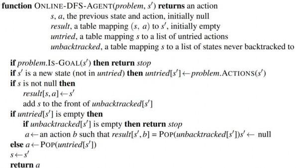
Chúng tôi khuyên người đọc nên theo dõi tiến trình của ONLINE-DFS-AGENT khi áp dụng cho mê cung trong Hình 4.19. Khá dễ dàng để thấy rằng tác nhân sẽ, trong trường hợp xấu nhất, cuối cùng đi qua mọi liên kết trong không gian trạng thái chính xác hai lần. Đối với việc khám phá, điều này là tối ưu; mặt khác, đối với việc tìm kiếm mục tiêu, tỷ lệ cạnh tranh của tác nhân có thể tùy ý tồi tệ nếu nó đi vào một chuyến đi chơi dài khi có một mục tiêu ngay bên cạnh trạng thái ban đầu. Một biến thể trực tuyến của việc lặp lại làm sâu sắc giải quyết vấn đề này; đối với một môi trường là một cây đồng nhất, tỷ lệ cạnh tranh của một tác nhân như vậy là một hằng số nhỏ.
Vì phương pháp quay lui của nó, ONLINE-DFS-AGENT chỉ hoạt động trong các không gian trạng thái mà các hành động có thể đảo ngược. Có các thuật toán phức tạp hơn một chút hoạt động trong các không gian trạng thái chung, nhưng không có thuật toán nào như vậy có tỷ lệ cạnh tranh bị chặn.
Tìm kiếm cục bộ trực tuyến
Giống như tìm kiếm theo chiều sâu, tìm kiếm leo đồi có thuộc tính cục bộ trong việc mở rộng nút của nó. Trên thực tế, vì nó chỉ giữ một trạng thái hiện tại trong bộ nhớ, tìm kiếm leo đồi đã là một thuật toán tìm kiếm trực tuyến! Thật không may, thuật toán cơ bản không tốt lắm cho việc khám phá vì nó để tác nhân ngồi ở các cực đại cục bộ mà không có nơi nào để đi. Hơn nữa, việc khởi động lại ngẫu nhiên không thể được sử dụng, bởi vì tác nhân không thể dịch chuyển tức thời đến một trạng thái bắt đầu mới.
Thay vì khởi động lại ngẫu nhiên, người ta có thể xem xét sử dụng một bước đi ngẫu nhiên để khám phá môi trường. Một bước đi ngẫu nhiên chỉ đơn giản là chọn ngẫu nhiên một trong các hành động có sẵn từ trạng thái hiện tại; ưu tiên có thể được dành cho các hành động chưa được thử. Dễ dàng chứng minh rằng một bước đi ngẫu nhiên cuối cùng sẽ tìm thấy một mục tiêu hoặc hoàn thành việc khám phá của nó, miễn là không gian là hữu hạn và có thể khám phá một cách an toàn. Mặt khác, quá trình này có thể rất chậm. Hình 4.22 cho thấy một môi trường trong đó một bước đi ngẫu nhiên sẽ mất số bước theo cấp số mũ để tìm thấy mục tiêu, bởi vì, đối với mỗi trạng thái trong hàng trên cùng ngoại trừ S, tiến trình lùi lại có khả năng gấp đôi so với tiến trình về phía trước. Tất nhiên, ví dụ này là được tạo ra, nhưng có nhiều không gian trạng thái trong thế giới thực có cấu trúc liên kết gây ra những loại “bẫy” này cho các bước đi ngẫu nhiên.
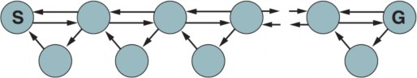
Việc bổ sung bộ nhớ thay vì tính ngẫu nhiên vào leo đồi hóa ra là một cách tiếp cận hiệu quả hơn. Ý tưởng cơ bản là lưu trữ một “ước tính tốt nhất hiện tại” H(s) về chi phí để đạt đến mục tiêu từ mỗi trạng thái đã được truy cập. H(s) bắt đầu chỉ là ước tính heuristic h(s) và được cập nhật khi tác nhân có được kinh nghiệm trong không gian trạng thái.
Hình 4.23 cho thấy một ví dụ đơn giản trong một không gian trạng thái một chiều. Trong (a), tác nhân dường như bị mắc kẹt trong một cực tiểu cục bộ phẳng ở trạng thái màu đỏ. Thay vì ở yên đó, tác nhân nên đi theo con đường dường như là tốt nhất đến mục tiêu dựa trên các ước tính chi phí hiện tại cho các hàng xóm của nó. Chi phí ước tính để đạt đến mục tiêu thông qua một hàng xóm s’ là chi phí để đến s’ cộng với chi phí ước tính để đến mục tiêu từ đó—tức là c(s, a, s') +. Trong ví dụ, có hai hành động, với chi phí ước tính là 1 + 9 sang trái và 1 + 2 sang phải, vì vậy có vẻ tốt nhất là di chuyển sang phải.
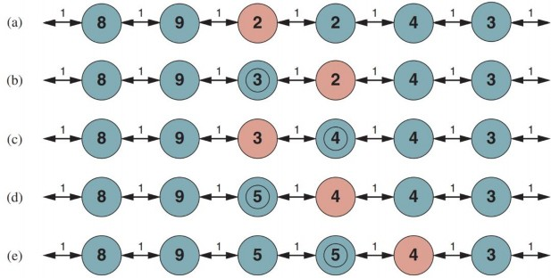
Trong (b) rõ ràng là ước tính chi phí là 2 cho trạng thái màu đỏ trong (a) là quá lạc quan. Vì bước di chuyển tốt nhất có chi phí 1 và dẫn đến một trạng thái cách mục tiêu ít nhất 2 bước, trạng thái màu đỏ phải cách mục tiêu ít nhất 3 bước, vì vậy H của nó nên được cập nhật tương ứng, như được hiển thị trong Hình 4.23(b). Tiếp tục quá trình này, tác nhân sẽ di chuyển qua lại hai lần nữa, cập nhật H mỗi lần và “san phẳng” cực tiểu cục bộ cho đến khi nó thoát ra khỏi đó sang bên phải.
Một tác nhân thực hiện sơ đồ này, được gọi là học A* thời gian thực (LRTA*), được hiển thị trong Hình 4.24. Giống như ONLINE-DFS-AGENT, nó xây dựng một bản đồ của môi trường trong bảng result. Nó cập nhật ước tính chi phí cho trạng thái mà nó vừa rời đi và sau đó chọn bước di chuyển “có vẻ tốt nhất” theo ước tính chi phí hiện tại của nó. Một chi tiết quan trọng là các hành động chưa được thử trong một trạng thái s luôn được giả định là dẫn ngay lập tức đến
mục tiêu với chi phí thấp nhất có thể, cụ thể là h(s). Sự lạc quan trong điều không chắc chắn
này khuyến khích tác nhân khám phá các con đường mới, có thể hứa hẹn.
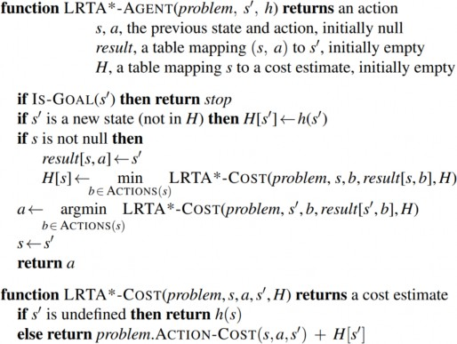
Một tác nhân LRTA* được đảm bảo sẽ tìm thấy một mục tiêu trong bất kỳ môi trường hữu hạn, có thể khám phá một cách an toàn nào. Tuy nhiên, không giống như A*, nó không hoàn chỉnh cho các không gian trạng thái vô hạn—có những trường hợp nó có thể bị lạc vô hạn. Nó có thể khám phá một môi trường n trạng thái trong 𝑂(𝑛2) bước trong trường hợp xấu nhất, nhưng thường hoạt động tốt hơn nhiều. Tác nhân LRTA* chỉ là một trong một họ lớn các tác nhân trực tuyến mà người ta có thể định nghĩa bằng cách chỉ định quy tắc lựa chọn hành động và quy tắc cập nhật theo những cách khác nhau. Chúng ta sẽ thảo luận về họ này, ban đầu được phát triển cho các môi trường ngẫu nhiên, trong Chương 23.
Học trong tìm kiếm trực tuyến
Sự thiếu hiểu biết ban đầu của các tác nhân tìm kiếm trực tuyến cung cấp một số cơ hội để học hỏi. Thứ nhất, các tác nhân học một “bản đồ” của môi trường—chính xác hơn, kết quả của mỗi hành động trong mỗi trạng thái—chỉ đơn giản bằng cách ghi lại từng kinh nghiệm của chúng. Thứ hai, các tác nhân tìm kiếm cục bộ có được các ước tính chính xác hơn về chi phí của mỗi trạng thái bằng cách sử dụng các quy tắc cập nhật cục bộ, như trong LRTA*. Trong Chương 23, chúng ta sẽ chỉ ra rằng các bản cập nhật này cuối cùng hội tụ đến các giá trị chính xác cho mọi trạng thái, với
điều kiện tác nhân khám phá không gian trạng thái theo đúng cách. Khi các giá trị chính xác đã được biết, các quyết định tối ưu có thể được đưa ra chỉ đơn giản bằng cách di chuyển đến người kế thừa có chi phí thấp nhất—tức là, leo đồi thuần túy sau đó là một chiến lược tối ưu.
Nếu bạn làm theo gợi ý của chúng tôi để theo dõi hành vi của ONLINE-DFS-AGENT trong môi trường của Hình 4.19, bạn sẽ nhận thấy rằng tác nhân không thông minh lắm. Ví dụ, sau khi nó đã thấy rằng hành động Up đi từ (1, 1) đến (1, 2), tác nhân vẫn không có ý tưởng rằng hành động Down quay trở lại (1, 1) hoặc hành động Up cũng đi từ (2, 1) đến (2, 2), từ (2, 2) đến (2, 3), v.v. Nói chung, chúng ta muốn tác nhân học rằng Up tăng tọa độ y trừ khi có một bức tường cản đường, rằng Down giảm nó, v.v.
Để điều này xảy ra, chúng ta cần hai điều. Thứ nhất, chúng ta cần một biểu diễn chính thức và có thể thao tác rõ ràng cho các loại quy tắc chung này; cho đến nay, chúng ta đã ẩn thông tin bên trong hộp đen được gọi là hàm RESULT. Các Chương 8 đến 11 được dành cho vấn đề này. Thứ hai, chúng ta cần các thuật toán có thể xây dựng các quy tắc chung phù hợp từ các quan sát cụ thể do tác nhân thực hiện. Những điều này được đề cập trong Chương 19.
Nếu chúng ta dự đoán rằng chúng ta sẽ được yêu cầu giải quyết nhiều bài toán tương tự trong tương lai, thì việc đầu tư thời gian (và bộ nhớ) để làm cho các tìm kiếm trong tương lai đó dễ dàng hơn là điều hợp lý. Có một số cách để làm điều này, tất cả đều thuộc tiêu đề tìm kiếm tăng dần. Chúng ta có thể giữ cây tìm kiếm trong bộ nhớ và sử dụng lại các phần của nó không thay đổi trong bài toán mới. Chúng ta có thể giữ các giá trị heuristic h và cập nhật chúng khi chúng ta có được thông tin mới—hoặc vì thế giới đã thay đổi hoặc vì chúng ta đã tính toán một ước tính tốt hơn. Hoặc chúng ta có thể giữ các giá trị g đường đi tốt nhất, sử dụng chúng để ghép lại một giải pháp mới và cập nhật chúng khi thế giới thay đổi.
Tóm tắt
Chương này đã xem xét các thuật toán tìm kiếm cho các bài toán trong môi trường có thể quan sát
được một phần, không xác định, không xác định và liên tục.
Các phương pháp tìm kiếm cục bộ như leo đồi chỉ giữ một số lượng nhỏ các trạng thái trong bộ nhớ. Chúng đã được áp dụng cho các bài toán tối ưu hóa, trong đó ý tưởng là tìm một trạng thái có điểm số cao, mà không phải lo lắng về đường đi đến trạng thái đó. Một số thuật toán tìm kiếm cục bộ ngẫu nhiên đã được phát triển, bao gồm cả tôi luyện mô, trả về các giải pháp tối ưu khi được cung cấp một lịch trình làm mát thích hợp.
Nhiều phương pháp tìm kiếm cục bộ cũng áp dụng cho các bài toán trong không gian liên tục. Các bài toán quy hoạch tuyến tính và tối ưu hóa lồi tuân theo một số hạn chế nhất định về hình dạng của không gian trạng thái và bản chất của hàm mục tiêu, và cho phép các thuật toán thời gian đa thức thường cực kỳ hiệu quả trong thực tế. Đối với một số bài toán được hình thành tốt về mặt toán học, chúng ta có thể tìm thấy cực đại bằng cách sử dụng phép vi tích phân để tìm nơi gradient bằng 0; đối với các bài toán khác, chúng ta phải sử dụng gradient thực nghiệm, đo lường sự khác biệt về độ thích ứng giữa hai điểm gần nhau.
Một thuật toán tiến hóa là một tìm kiếm leo đồi ngẫu nhiên trong đó một quần thể các trạng thái được duy trì. Các trạng thái mới được tạo ra bằng cách đột biến và bằng cách lai ghép, kết hợp các cặp trạng thái.
Trong các môi trường không xác định, các tác nhân có thể áp dụng tìm kiếm AND–OR để tạo ra các kế hoạch có điều kiện đạt đến mục tiêu bất kể kết quả nào xảy ra trong quá trình thực hiện.
Khi môi trường có thể quan sát được một phần, trạng thái niềm tin biểu thị tập hợp các trạng thái có thể có mà tác nhân có thể ở trong.
Các thuật toán tìm kiếm tiêu chuẩn có thể được áp dụng trực tiếp vào không gian trạngđể giải quyết các bài toán không có cảm biến, và tìm kiếm AND–OR trạng thái niềm tin có thể giải quyết các bài toán có thể quan sát được một phần nói chung. Các thuật toán tăng dần xây dựng các giải pháp từng trạng thái một trong một trạng thái niềm tin thường hiệu quả hơn.
Các bài toán khám phá phát sinh khi tác nhân không có ý tưởng về các trạng thái và hành động của môi trường của nó. Đối với các môi trường có thể khám phá một cách an toàn, các tác nhân tìm kiếm trực tuyến có thể xây dựng một bản đồ và tìm một mục tiêu nếu có. Việc cập nhật các ước tính heuristic từ kinh nghiệm cung cấp một phương pháp hiệu quả để thoát khỏi các cực tiểu cục bộ.
Ghi chú thư mục và lịch sử
Các kỹ thuật tìm kiếm cục bộ có một lịch sử lâu đời trong toán học và khoa học máy tính. Thật vậy, phương pháp Newton–Raphson (Newton, 1671; Raphson, 1690) có thể được coi là một phương pháp tìm kiếm cục bộ rất hiệu quả cho các không gian liên tục trong đó thông tin gradient có sẵn. Brent (1973) là một tài liệu tham khảo kinh điển cho các thuật toán tối ưu hóa không yêu cầu thông tin như vậy. Tìm kiếm chùm, mà chúng ta đã trình bày như một thuật toán tìm kiếm cục bộ, có nguồn gốc là một biến thể có chiều rộng bị chặn của quy hoạch động để nhận dạng giọng nói trong hệ thống HARPY (Lowerre, 1976). Một thuật toán liên quan được Pearl phân tích sâu (1984, Ch. 5).
Chủ đề tìm kiếm cục bộ đã được tiếp thêm sinh lực vào đầu những năm 1990 bởi những kết quả tốt đáng ngạc nhiên cho các bài toán thỏa mãn ràng buộc lớn như n-hậu (Minton et al., 1992) và tính thỏa mãn Boolean (Selman et al., 1992) và bằng cách kết hợp tính ngẫu nhiên, nhiều tìm kiếm đồng thời và các cải tiến khác. Sự phục hưng của những gì Christos Papadimitriou đã gọi là các thuật toán “Thời đại mới” cũng làm dấy lên sự quan tâm ngày càng tăng trong số các nhà khoa học máy tính lý thuyết (Koutsoupias và Papadimitriou, 1992; Aldous và Vazirani, 1994).
Trong lĩnh vực nghiên cứu hoạt động, một biến thể của leo đồi được gọi là tìm kiếm tabu đã trở nên phổ biến (Glover và Laguna, 1997). Thuật toán này duy trì một danh sách tabu gồm k trạng thái đã truy cập trước đó không thể được truy cập lại; cũng như cải thiện hiệu quả khi tìm kiếm đồ thị, danh sách này có thể cho phép thuật toán thoát khỏi một số cực tiểu cục bộ.
Một cải tiến hữu ích khác trên leo đồi là thuật toán STAGE (Boyan và Moore, 1998). Ý tưởng là sử dụng các cực đại cục bộ được tìm thấy bằng cách khởi động lại leo đồi ngẫu nhiên để có được ý tưởng về hình dạng tổng thể của cảnh quan. Thuật toán phù hợp với một bề mặt bậc hai trơn tru cho tập hợp các cực đại cục bộ và sau đó tính toán cực đại toàn cầu của bề mặt đó một cách phân tích. Điều này trở thành điểm khởi động lại mới. Gomes et al. (1998) đã chỉ ra rằng thời gian chạy của các thuật toán quay lui có hệ thống thường có một phân phối đuôi nặng, có nghĩa là xác suất của một thời gian chạy rất dài lớn hơn so với dự đoán nếu thời gian chạy được phân phối theo cấp số mũ. Khi phân phối thời gian chạy có đuôi nặng, việc khởi động lại ngẫu nhiên tìm thấy một giải pháp nhanh hơn, trung bình, so với một lần chạy duy nhất đến khi hoàn thành. Hoos và Stutzle (2004) cung cấp một cuốn sách bao gồm chủ đề này.
Tôi luyện mô phỏng lần đầu tiên được Kirkpatrick et al. (1983) mô tả, người đã mượn trực tiếp từ thuật toán Metropolis (được sử dụng để mô phỏng các hệ thống phức tạp trong vật lý (Metropolis et al., 1953) và được cho là đã được phát minh tại một bữa tiệc tối ở Los Alamos). Tôi luyện mô phỏng hiện là một lĩnh vực của riêng nó, với hàng trăm bài báo được xuất bản mỗi năm.
Tìm kiếm các giải pháp tối ưu trong không gian liên tục là chủ đề của một số lĩnh vực, bao gồm lý thuyết tối ưu hóa, lý thuyết điều khiển tối ưu và vi tích phân biến phân. Các kỹ thuật cơ bản được Bishop (1995) giải thích tốt; Press et al. (2007) bao gồm một loạt các thuật toán và cung cấp phần mềm hoạt động.
Các nhà nghiên cứu đã lấy cảm hứng cho các thuật toán tìm kiếm và tối ưu hóa từ nhiều lĩnh vực nghiên cứu khác nhau: luyện kim (tôi luyện mô phỏng); sinh học (thuật toán di truyền); khoa học thần kinh (mạng lưới thần kinh); leo núi (leo đồi); kinh tế học (thuật toán dựa trên thị trường (Dias et al., 2006)); vật lý (đàn hạt (Li và Yao, 2012) và thủy tinh spin (Mezard et al., 1987)); hành vi động vật (học tăng cường, bộ tối ưu hóa sói xám (Mirjalili và Lewis, 2014)); điểu học (tìm kiếm chim cúc cu (Yang và Deb, 2014)); côn trùng học (đàn kiến (Dorigo et al., 2008), đàn ong (Karaboga và Basturk, 2007), đom đóm (Yang, 2009) và tối ưu hóa đom đóm (Krishnanand và Ghose, 2009)); và những lĩnh vực khác.